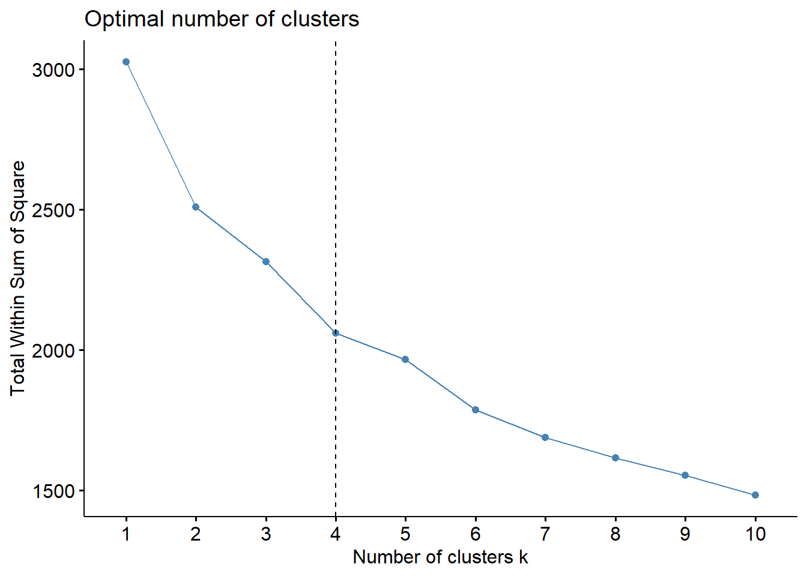
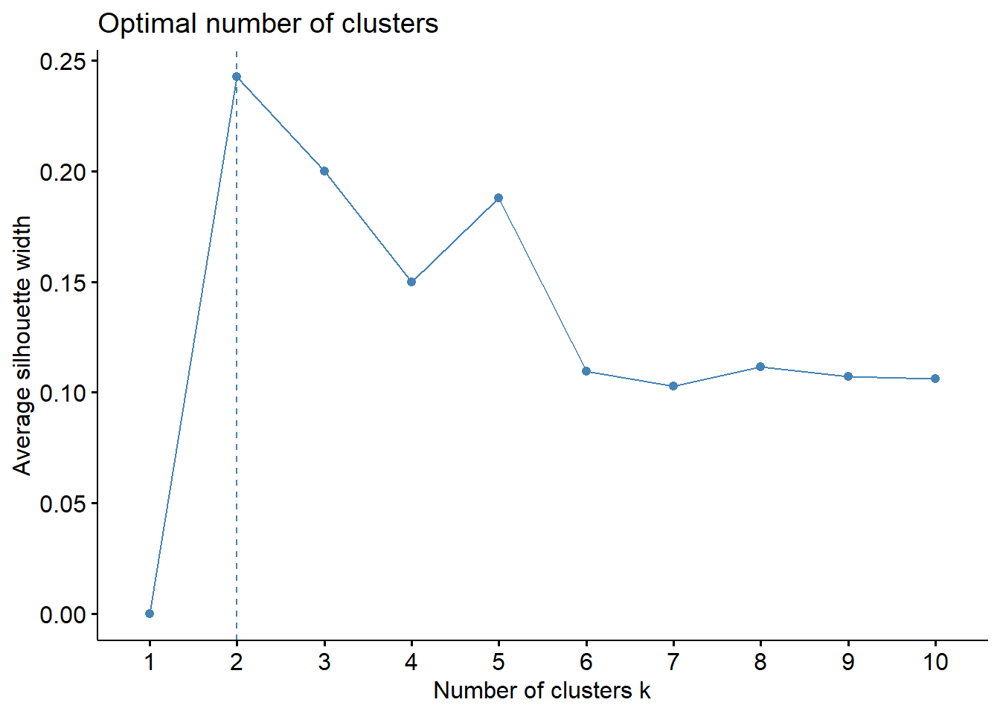
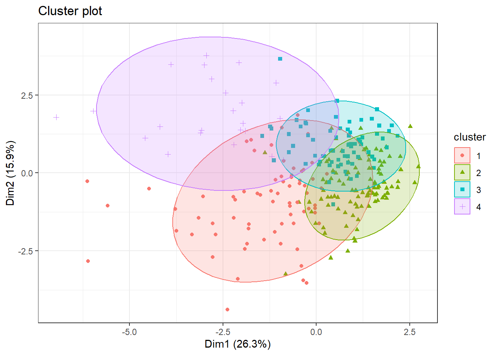
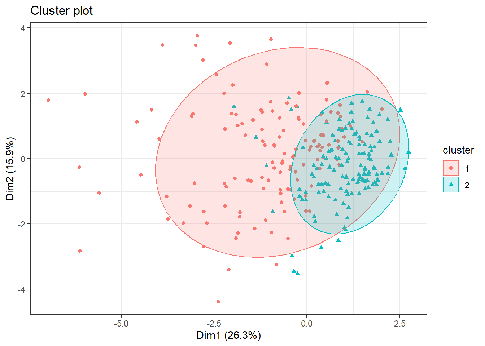
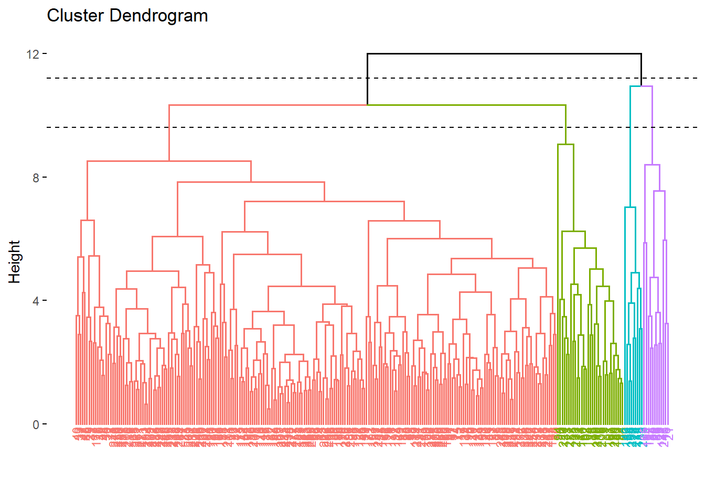

library(tidyverse)
library(dplyr)
library(GGally)
library(psych)
library(skimr)
library(fmsb)
library(mvnormtest)
library(car)
library(nortest)
library(fBasics)
library(ggplot2)
library(factoextra)
library(stats)
library(cluster)
library(NbClust)
library(ggrepel)Clustering
Recordatorio
Vamos a tratar una base de datos relacionados con la predicción de riesgo de cirrosis. La cirrosis es una etapa tardía de la cicatrización (fibrosis) del hígado causada por muchas formas de enfermedades y afecciones hepáticas, como la hepatitis y el alcoholismo crónico.
Nuestro objetivo para este estudio sería estudiar algunos perfiles con riesgo de padecer cirrosis.
Recordemos nuestra tabla de datos:
datos <- read.table("cirrosis_tidy.csv", header = TRUE )
datos = datos %>% mutate(Ascites = Ascites %>% as.factor,
Hepatomegaly = Hepatomegaly %>% as.factor,
Spiders = Spiders %>% as.factor,
Edema = Edema %>% as.factor,
Stage = Stage %>% as.factor,
Drug = Drug %>% as.factor,
Sex = Sex %>% as.factor,
Status = Status %>% as.factor)
glimpse(datos)Rows: 276
Columns: 20
$ ID <int> 1, 2, 3, 4, 5, 7, 8, 9, 10, 11, 12, 13, 15, 16, 17, 18, …
$ N_Days <int> 400, 4500, 1012, 1925, 1504, 1832, 2466, 2400, 51, 3762,…
$ Status <fct> Muerto, Cens, Muerto, Muerto, Cens_Trat, Cens, Muerto, M…
$ Drug <fct> D-penicillamine, D-penicillamine, D-penicillamine, D-pen…
$ Age <int> 21464, 20617, 25594, 19994, 13918, 20284, 19379, 15526, …
$ Sex <fct> Female, Female, Male, Female, Female, Female, Female, Fe…
$ Ascites <fct> Si, No, No, No, No, No, No, No, Si, No, No, No, No, No, …
$ Hepatomegaly <fct> Si, Si, No, Si, Si, Si, No, No, No, Si, No, No, No, No, …
$ Spiders <fct> Si, Si, No, Si, Si, No, No, Si, Si, Si, Si, No, No, No, …
$ Edema <fct> Si, No, Sin, Sin, No, No, No, No, Si, No, No, No, No, No…
$ Bilirubin <dbl> 14.5, 1.1, 1.4, 1.8, 3.4, 1.0, 0.3, 3.2, 12.6, 1.4, 3.6,…
$ Cholesterol <int> 261, 302, 176, 244, 279, 322, 280, 562, 200, 259, 236, 2…
$ Albumin <dbl> 2.60, 4.14, 3.48, 2.54, 3.53, 4.09, 4.00, 3.08, 2.74, 4.…
$ Copper <int> 156, 54, 210, 64, 143, 52, 52, 79, 140, 46, 94, 40, 173,…
$ Alk_Phos <dbl> 1718.0, 7394.8, 516.0, 6121.8, 671.0, 824.0, 4651.2, 227…
$ SGOT <dbl> 137.95, 113.52, 96.10, 60.63, 113.15, 60.45, 28.38, 144.…
$ Tryglicerides <int> 172, 88, 55, 92, 72, 213, 189, 88, 143, 79, 95, 130, 96,…
$ Platelets <int> 190, 221, 151, 183, 136, 204, 373, 251, 302, 258, 71, 24…
$ Prothrombin <dbl> 12.2, 10.6, 12.0, 10.3, 10.9, 9.7, 11.0, 11.0, 11.5, 12.…
$ Stage <fct> 4, 3, 4, 4, 3, 3, 3, 2, 4, 4, 4, 3, 3, 3, 4, 4, 3, 4, 4,…El tibble resultante consta de 276 observaciones y 20 variables. Cada muestra representa un paciente al que se le ha extraido la siguiente información:
ID: Identificador únicoN_Days: Número de días entre el registro y la fecha de defunción, transplante o estudio analítico en Julio de 1986.Status: Estatus del paciente: C (Censurado), CL (censurado debido a tratamiento hepático), o D (Muerto)Drug: Tipo de fármaco: D-penicilamina o placeboAge: Edad [días]Sex: Sexo cromosómico: Male (hombre) o Female (Mujer)Ascites: Presencia de Ascitis: No o SiHepatomegaly: Presencia de Hepatomegalia: No o SiSpiders: Presencia de arañas vasculares: No o SiEdema: Presencia de Edema: No (no hay edema y sin tratamiento diurético para el edema), Sin (presencia de edema sin diuréticos, o edema curado con diuréticos), o Si (edema a pesar del tratamiento con diuréticos)Bilirubin: Bilirrubina sérica [mg/dl]Cholesterol: Colesterol sérico [mg/dl]Albumin: Albúmina [g/dl]Copper: Cobre en orina [ug/day]Alk_Phos: Fosfatasa alcalina [U/liter]SGOT: SGOT [U/ml]Triglycerides: Triglicéridos [mg/dl]Platelets: Plaquetas por cúbico [ml/1000]Prothrombin: Tiempo de Protrombina [s]Stage: Estado histórico de la enfermedad (1, 2, 3, or 4)
Resumen numérico de las variables
- Datos cuantitativos:
Unidad Media Desv Minimo Maximo Rango
N_Days Días 1979.167 1112.380 41.00 4556.00 4515.00
Age Días 18189.326 3843.556 9598.00 28650.00 19052.00
Bilirubin mg/dl 3.334 4.601 0.30 28.00 27.70
Cholesterol mg/dl 371.261 234.788 120.00 1775.00 1655.00
Albumin g/dl 3.517 0.405 1.96 4.40 2.44
Copper ug/día 100.768 88.269 4.00 588.00 584.00
Alk_Phos U/l 1996.612 2115.478 289.00 13862.40 13573.40
SGOT U/ml 124.119 56.720 28.38 457.25 428.87
Tryglicerides mg/dl 124.978 65.281 33.00 598.00 565.00
Platelets ml/1000 261.772 93.129 62.00 563.00 501.00
Prothrombin s 10.736 1.008 9.00 17.10 8.10- Datos cualitativos:
Status Drug Sex Ascites Hepatomegaly
Cens :147 D-penicillamine:136 Female:242 No:257 No:134
Cens_Trat: 18 Placebo :140 Male : 34 Si: 19 Si:142
Muerto :111
Spiders Edema Stage
No:196 No :234 1: 12
Si: 80 Si : 17 2: 59
Sin: 25 3:111
4: 94 Análisis de normalidad multivariante
Con estos datos vamos a realizar nuestro estudio de normalidad multivariante.
Calculemos el vector de medias
y la distancia de Mahalanobis:
d_Mahalanobis = apply(datos_quant, MARGIN = 1, function(x)
t(x - Medias)%*%solve(S)%*%(x - Medias))Una vez calculadas estas medidas, representemos los datos

Notemos que no sigue una Chi-cuadrado, i por tanto los datos tampoco siguen una normal multivariante.
Vamos a realizar un test de normalidad para confirmarlo. Utilizaremos Shapiro-Wilk:
mvnormtest::mshapiro.test(t(datos_quant))
Shapiro-Wilk normality test
data: Z
W = 0.83366, p-value < 2.2e-16Obtenemos un p-valor muy pequeño, prácticamente 0, entonces, rechazamos la hipótesis nula y concluimos que no hay normalidad multivariante, es decir, almenos una variable individual no se distribuye normalmente.
Clustering
Vamos a guardar en un nuevo dataset las variables cuantitativas. Vamos a tipificar o escalar nuestros datos para que esten todos a la misma escala:
datos2 <- datos_quant %>% scale()A continuación, realicemos una representación gráfica de matrices de distancia:
Primero de todo vamos a centrar la matriz de datos:
n <- dim(datos2)[1]
X <- as.matrix(datos2)
Hn <- diag(n)-1/n # matriz de centrado
cX <- Hn%*%X # matriz centradamat_dist <- dist(x = cX, method = "euclidean")fviz_dist(dist.obj = mat_dist, lab_size = 5) +
theme(legend.position = "none")K-means
En nuestro caso, no sabemos en cuantos clusters o grupos esta dividido nuestro dataset. Por tanto, vamos a estimar al número \(k\) óptimo para aplicar el método de kmeans(). Para ello, utilizaremos la función fviz_nbclust():
fviz_nbclust(x = cX, FUNcluster = kmeans, method = "wss",
diss = dist(cX, method = "euclidean")) 
#+
#geom_vline(xintercept = 3, linetype = 2)Realmente, con el método del codo, es un poco complicado establemcer un \(k\) óptimo, así que vamos a utilizar otros métodos que nos proporciona R:
fviz_nbclust(x = cX, FUNcluster = kmeans, method = "silhouette")
fviz_nbclust(x = cX, FUNcluster = kmeans, method = "gap_stat")
Con el método de la silueta, nos sugiere escoger \(k=2\), en cambio, con el siguiente, nos sugiere 8 clusters. Como no hemos salido de dudas, vamos a realizar otro experimento: vamos a realizar una función que nos proporciona 30 índices para determinar el número de clusters.
resnumclust = NbClust(data = cX, distance = "euclidean", min.nc = 2, max.nc = 10,
method = "kmeans", index = "alllong")
*** : The Hubert index is a graphical method of determining the number of clusters.
In the plot of Hubert index, we seek a significant knee that corresponds to a
significant increase of the value of the measure i.e the significant peak in Hubert
index second differences plot.
*** : The D index is a graphical method of determining the number of clusters.
In the plot of D index, we seek a significant knee (the significant peak in Dindex
second differences plot) that corresponds to a significant increase of the value of
the measure.
*******************************************************************
* Among all indices:
* 8 proposed 2 as the best number of clusters
* 1 proposed 3 as the best number of clusters
* 10 proposed 4 as the best number of clusters
* 1 proposed 7 as the best number of clusters
* 1 proposed 8 as the best number of clusters
* 3 proposed 9 as the best number of clusters
* 3 proposed 10 as the best number of clusters
***** Conclusion *****
* According to the majority rule, the best number of clusters is 4
******************************************************************* fviz_nbclust(resnumclust)Among all indices:
===================
* 2 proposed 0 as the best number of clusters
* 1 proposed 1 as the best number of clusters
* 8 proposed 2 as the best number of clusters
* 1 proposed 3 as the best number of clusters
* 10 proposed 4 as the best number of clusters
* 1 proposed 7 as the best number of clusters
* 1 proposed 8 as the best number of clusters
* 3 proposed 9 as the best number of clusters
* 3 proposed 10 as the best number of clusters
Conclusion
=========================
* According to the majority rule, the best number of clusters is 4 .
Vamos a calcular los 4 clusters con nuestros datos y con 30 iteraciones. Además, vamos a visualizar como ha quedado la partición.
#set.seed(2312)
km_clusters <- kmeans(x = cX, centers = 4, nstart = 30)
km_clusters$cluster [1] 1 4 1 1 2 2 2 2 1 2 1 2 4 2 1 3 2 1 2 1 3 4 2 3 3 3 4 1 4 4 1 2 4 2 1 2 4
[38] 4 2 4 2 4 2 2 4 4 4 4 4 4 2 2 1 3 1 2 2 2 2 3 2 2 2 3 3 3 1 1 2 1 3 2 1 2
[75] 2 3 2 2 2 2 1 1 2 1 1 2 2 1 2 2 1 2 2 1 2 2 2 2 1 1 2 2 2 3 2 2 3 1 2 2 2
[112] 2 3 1 2 2 2 2 2 2 3 1 2 2 2 2 3 2 1 3 1 2 1 2 1 2 3 2 2 2 2 2 1 2 1 3 2 2
[149] 2 2 2 2 2 2 2 2 2 3 2 1 3 1 2 3 2 3 2 2 1 2 2 2 2 2 2 2 2 2 1 2 2 2 2 2 3
[186] 3 2 1 2 1 1 2 2 2 1 2 1 2 1 2 1 2 3 2 1 1 2 3 1 1 3 2 2 3 2 2 2 2 1 1 2 2
[223] 2 2 2 1 1 2 2 1 2 2 1 1 1 2 2 2 2 2 2 2 2 2 2 3 2 2 2 2 2 1 2 1 2 2 2 1 3
[260] 2 2 1 2 2 2 2 1 2 4 2 2 2 1 1 2 3Ahora bien, representemos dichos clusters en el plano. Como nuestro número de variables (dimensionalidad) es mayor de 2, automáticamente realiza un PCA y representa las dos primeras componentes principales (Dim1 y Dim2)
fviz_cluster(object = km_clusters, data = cX, show.clust.cent = TRUE, geom ="point",
ellipse.type = "euclid", star.plot = TRUE, repel = TRUE) +
theme_bw() +
theme(legend.position = "none")
Como podemos var, al menos en la proyección en 2 dimensiones, hay bastante solapamiento. Además, si vemos la zona pintada como si fuera un intervalo de confianza, hay muchas observaciones que quedan fuera.
res = hcut(cX, k=4, stand = TRUE)
fviz_dend(res, rect = TRUE, cex = 0.5, k_colors = c("#FF7078", "#F39B4C", "#7FBFF5", "#A298E8"))Warning: The `<scale>` argument of `guides()` cannot be `FALSE`. Use "none" instead as
of ggplot2 3.3.4.
ℹ The deprecated feature was likely used in the factoextra package.
Please report the issue at <https://github.com/kassambara/factoextra/issues>.
K-medoids (PAM)
En este caso, cada cluster está representado por una observación presente en el cluster (medoid), mientras que en K-means cada cluster está representado por su centroide, que se corresponde con el promedio de todas las observaciones del cluster pero con ninguna en particular.
fviz_nbclust(x = cX, FUNcluster = pam, method = "wss",
diss = dist(datos, method = "euclidean")) +
geom_vline(xintercept = 6, linetype = 2)
pam_clusters <- pam(x = cX, k = 6, metric = "euclidean")
fviz_cluster(object = pam_clusters, data = cX, ellipse.type = "t", geom = "point", repel = TRUE) +
theme_bw() +
theme(legend.position = "none")Dendograma
set.seed(101)
hc_completo <- datos_quant %>% scale() %>% dist(method = "euclidean") %>%
hclust(method = "complete")
fviz_dend(x = hc_completo, k = 3, cex = 0.6) +
geom_hline(yintercept = 10.5, linetype = "dashed")
Análisis de Componentes Principales
Calculamos las componentes principales con el comando prcomp utilizando nuestro dataset, sin escalar los datos ya que están todos en la misma escala. Por último, los consideramos centrados en el 0.
datos.acp=prcomp(cX, scale = FALSE, center = FALSE)Los valores propios muestran el porcentaje de varianza explicada por cada componente principal.
eigenvalue variance.percent cumulative.variance.percent
Dim.1 2.88813 26.25575 26.25575
Dim.2 1.74439 15.85808 42.11383
Dim.3 1.12545 10.23139 52.34522
Dim.4 0.96744 8.79488 61.14010
Dim.5 0.84138 7.64895 68.78905
Dim.6 0.79369 7.21540 76.00445
Dim.7 0.70646 6.42232 82.42677
Dim.8 0.63293 5.75392 88.18069
Dim.9 0.52599 4.78173 92.96242
Dim.10 0.44467 4.04246 97.00489
Dim.11 0.32946 2.99511 100.00000Efectivamente, viendo el gráfico y utilizando el criterio del codo, nos quedaremos con
Realicemos un gráfico de círculo de correlación variable para ver como se agrupan las variables y la calidad de representación que tienen.

Para corroborar numéricamente la calidad de representación, realizaremos un gráfico de cos2.

Efectivamente, las tres primeras variables tienen un cos2 alto, por tanto estas bien representadas. En cambio, las otras variables tienen un valor de cos2 prácticamente nulo, indica que estas variables no estan bien representadas por las componentes principales.
Para ver como se relacionan las componentes principales con los datos originales, veamos los autovectores.
PC1 PC2 PC3 PC4 PC5 PC6 PC7 PC8
N_Days 0.3585 0.2066 -0.3548 -0.3215 -0.1701 -0.0608 0.3194 0.1849
Age -0.1023 -0.4465 -0.3694 0.3263 0.0856 -0.3350 0.1371 0.6278
Bilirubin -0.4919 0.0652 0.0314 0.0376 -0.2631 -0.0897 0.0298 -0.0646
Cholesterol -0.2640 0.4403 0.1601 0.0287 -0.0302 -0.5081 0.1715 -0.0064
Albumin 0.3257 0.2734 -0.0163 -0.0258 -0.6241 0.1591 -0.0965 0.3464
Copper -0.3962 -0.0226 -0.0765 -0.0310 -0.0709 0.5439 -0.4044 0.3027
Alk_Phos -0.1544 0.2527 -0.6300 -0.3329 0.4022 0.1715 0.0787 -0.1060
SGOT -0.3326 0.2131 0.2808 -0.4654 0.0933 -0.1105 0.0343 0.4727
Tryglicerides -0.3010 0.2445 -0.2039 0.4710 -0.2455 0.2849 0.4856 -0.1146
Platelets 0.0885 0.4649 -0.2610 0.3669 0.1115 -0.2738 -0.6140 0.0259
Prothrombin -0.2311 -0.3154 -0.3459 -0.3199 -0.5059 -0.3145 -0.2363 -0.3275
PC9 PC10 PC11
N_Days -0.3073 0.5201 0.2563
Age 0.1057 -0.0597 0.0023
Bilirubin -0.0365 -0.1514 0.8030
Cholesterol 0.5095 0.3555 -0.1884
Albumin 0.3539 -0.3845 -0.0325
Copper 0.1441 0.5055 -0.0577
Alk_Phos 0.3117 -0.3139 0.0196
SGOT -0.4271 -0.2648 -0.2246
Tryglicerides -0.2999 -0.0618 -0.3194
Platelets -0.3272 -0.0278 0.0202
Prothrombin -0.1044 0.0015 -0.3104Observemos que la primera componente principal da un peso muy elevado y positivo a la variable Agrucultura, y de signo contrario a las demás (excepto Mineria con un peso muy bajo).
Respecto a la segunda componente principal, representa sobretodo a Fábrica y a Servicios Sociales y Personales (con signos opuestos pero un peso elevado).
Ahora, vamos a realizar un biplot, que nos permitirá visualizar las variables originales y las observaciones transformadas en los ejes de componentes principales.

De nuevo, se aprecia como la variable Agricultura es la mejor representada debido a la longitud de la flecha. Le siguen las variables de Fábricas y Servicios Sociales y Personales, mejor representadas por la segunda componente.
Resultados del Análisis
Llegado a este punto, vamos a comprobar numéricamente todas las conclusiones que hemos sacado anteriormente. Realmente basta restringirnos a las dos primeras componentes principales ya que en el estudio hemos decidido utilizar solamente estas dos.
Resultados por Variables
Empezamos por las contribuciones de las variables a las componentes principales.
Dim.1 Dim.2 Dim.3 Dim.4 Dim.5 Dim.6 Dim.7 Dim.8
N_Days 12.8548 4.2688 12.5849 10.3357 2.8951 0.3698 10.2040 3.4204
Age 1.0475 19.9320 13.6471 10.6453 0.7328 11.2238 1.8788 39.4190
Bilirubin 24.1993 0.4249 0.0984 0.1412 6.9200 0.8041 0.0887 0.4169
Cholesterol 6.9682 19.3881 2.5630 0.0824 0.0911 25.8167 2.9407 0.0041
Albumin 10.6081 7.4756 0.0265 0.0665 38.9482 2.5305 0.9317 11.9989
Copper 15.6967 0.0509 0.5857 0.0963 0.5029 29.5870 16.3578 9.1617
Alk_Phos 2.3828 6.3843 39.6843 11.0841 16.1733 2.9416 0.6186 1.1237
SGOT 11.0622 4.5399 7.8823 21.6630 0.8700 1.2217 0.1175 22.3472
Tryglicerides 9.0575 5.9798 4.1565 22.1875 6.0275 8.1196 23.5773 1.3138
Platelets 0.7828 21.6108 6.8097 13.4638 1.2439 7.4970 37.6993 0.0669
Prothrombin 5.3400 9.9449 11.9616 10.2340 25.5952 9.8882 5.5856 10.7274
Dim.9 Dim.10 Dim.11
N_Days 9.4444 27.0508 6.5714
Age 1.1170 0.3561 0.0005
Bilirubin 0.1333 2.2916 64.4815
Cholesterol 25.9572 12.6405 3.5481
Albumin 12.5211 14.7873 0.1055
Copper 2.0768 25.5508 0.3335
Alk_Phos 9.7160 9.8529 0.0383
SGOT 18.2404 7.0104 5.0453
Tryglicerides 8.9955 0.3822 10.2027
Platelets 10.7078 0.0771 0.0408
Prothrombin 1.0904 0.0002 9.6323Tambien apreciamos la calidad de representación de las variables a las componentes principales.
Dim.1 Dim.2 Dim.3 Dim.4 Dim.5 Dim.6 Dim.7 Dim.8
N_Days 0.37126 0.07446 0.14164 0.09999 0.02436 0.00294 0.07209 0.02165
Age 0.03025 0.34769 0.15359 0.10299 0.00617 0.08908 0.01327 0.24950
Bilirubin 0.69891 0.00741 0.00111 0.00137 0.05822 0.00638 0.00063 0.00264
Cholesterol 0.20125 0.33820 0.02885 0.00080 0.00077 0.20491 0.02077 0.00003
Albumin 0.30638 0.13040 0.00030 0.00064 0.32770 0.02008 0.00658 0.07595
Copper 0.45334 0.00089 0.00659 0.00093 0.00423 0.23483 0.11556 0.05799
Alk_Phos 0.06882 0.11137 0.44663 0.10723 0.13608 0.02335 0.00437 0.00711
SGOT 0.31949 0.07919 0.08871 0.20958 0.00732 0.00970 0.00083 0.14144
Tryglicerides 0.26159 0.10431 0.04678 0.21465 0.05071 0.06444 0.16656 0.00832
Platelets 0.02261 0.37698 0.07664 0.13025 0.01047 0.05950 0.26633 0.00042
Prothrombin 0.15423 0.17348 0.13462 0.09901 0.21535 0.07848 0.03946 0.06790
Dim.9 Dim.10 Dim.11
N_Days 0.04968 0.12029 0.02165
Age 0.00588 0.00158 0.00000
Bilirubin 0.00070 0.01019 0.21244
Cholesterol 0.13653 0.05621 0.01169
Albumin 0.06586 0.06575 0.00035
Copper 0.01092 0.11362 0.00110
Alk_Phos 0.05111 0.04381 0.00013
SGOT 0.09594 0.03117 0.01662
Tryglicerides 0.04732 0.00170 0.03361
Platelets 0.05632 0.00034 0.00013
Prothrombin 0.00574 0.00000 0.03173Respecto a las variables, hemos podido comprobar lo expuesto anteriormente, se aprecia una fuerte contribución de la variable Agricultura a la primera componente principal, además de una muy buena representación (un valor de cos2 muy elevado).
Seguidamente, la variable Fábricas tiene gran contribución a la segunda componente principal, con menor representación debido al valor de cos2 y que también contribuye a la primera componente principal, pero muy poco. En cambio, la variable Servicios sociales y Personales tiene más poca contribución a la segunda componente, pero está algo mejor representada por la primera que la variable anterior; de todos modos, la calidad de representación es más baja que las anteriores.
No podemos destacar más variables ya que, como vimos en los gráficos, no habia prácticamente representación por parte de las componentes principales.
Resultados por Observaciones
Ahora, respecto a las observaciones, empezamos por las coordenadas.
Dim.1 Dim.2 Dim.3 Dim.4 Dim.5 Dim.6 Dim.7 Dim.8 Dim.9 Dim.10 Dim.11
1 -3.33 -1.98 -0.12 0.37 0.03 -0.29 0.10 -0.93 -0.77 -0.18 0.96
2 1.61 0.76 -2.47 -1.72 0.05 0.26 1.03 0.96 0.91 -0.45 0.53
3 -0.40 -2.98 -0.25 -0.05 -0.41 0.09 -0.82 0.95 0.78 0.31 -0.44
4 -0.13 -1.26 -1.25 -0.32 2.62 0.22 0.84 -1.21 0.45 0.26 0.49
5 0.13 -0.84 1.26 -0.88 -0.37 0.86 -0.21 -0.64 0.45 0.27 0.16
6 1.12 -0.01 0.09 1.62 -0.84 0.81 1.26 0.37 0.64 -0.52 -0.30
7 1.28 0.75 -2.20 1.09 -0.46 0.29 -0.07 -0.53 0.47 -0.61 -0.32
8 -0.29 0.29 0.36 -0.89 0.63 -0.74 0.12 -0.69 -0.12 0.73 -0.01
9 -2.70 -1.98 -0.17 1.32 0.55 -0.84 -0.68 0.24 -0.96 -0.60 0.94
10 1.88 -0.49 -1.01 -0.68 -1.77 -0.59 -0.11 0.26 0.09 0.17 0.15
11 -0.83 -3.24 -0.02 -0.55 -1.55 -0.45 -0.14 -0.95 0.87 -0.60 -0.85
12 1.74 0.25 -0.26 -0.19 -0.77 0.17 0.66 -0.09 -0.26 0.34 0.14
13 0.33 0.42 -3.39 -1.38 0.79 0.63 -0.11 1.39 0.84 -0.42 0.09
14 2.18 -0.46 0.22 -0.93 -0.52 0.10 0.35 -0.64 -0.18 0.64 0.58
15 -0.72 -0.96 0.48 0.48 0.74 0.60 -0.27 -0.13 0.05 0.08 -0.25
16 -5.59 -1.05 0.19 -0.44 -0.44 2.31 -2.54 1.58 -1.68 1.37 -0.63
17 1.56 -0.30 -0.83 -0.71 -0.46 -0.02 1.05 -0.12 -0.58 0.72 0.24
18 -1.17 -0.92 -1.14 0.11 -1.06 -0.93 -1.07 -0.14 -0.17 -0.18 -0.59
19 1.82 -0.73 -1.29 0.43 -0.77 -1.06 -0.33 0.65 -0.18 0.34 0.21
20 -1.81 -1.78 0.14 -0.57 -0.60 2.01 -2.22 1.34 1.38 1.37 -0.39
21 -6.13 -0.26 -1.04 -0.82 0.18 2.42 -1.47 1.17 0.31 0.77 0.79
22 -0.27 1.59 -0.60 -1.93 -0.41 1.62 2.81 1.20 0.11 -0.20 -0.51
23 2.24 0.52 -0.43 -0.82 -1.33 -0.59 -0.42 0.27 -0.44 0.42 0.27
24 -1.08 2.89 0.21 0.99 0.44 -1.96 0.14 0.50 1.07 -0.07 -0.45
25 -3.75 -1.85 -0.34 -0.10 -1.20 1.19 0.26 -0.86 0.74 -1.06 2.31
26 -3.78 -1.16 0.20 -0.87 -1.68 0.66 -0.12 -0.94 -0.80 -0.76 0.84
27 1.87 0.83 -2.85 -0.23 0.55 -1.00 0.19 0.79 0.25 0.16 0.65
28 -2.17 -0.86 -0.67 -0.95 2.21 1.55 0.53 -1.84 0.50 -0.33 -0.43
29 -0.42 1.49 -1.90 -3.01 1.56 1.06 1.05 0.23 0.12 -0.61 0.71
30 0.68 0.71 -2.94 -0.73 0.93 0.55 1.03 -0.07 -0.17 0.59 0.52
31 -0.19 -0.94 -0.11 -1.83 -0.09 -0.38 0.59 0.38 -1.52 0.25 -0.73
32 1.41 0.41 -0.16 -1.18 0.04 -0.76 0.37 1.01 -0.56 0.29 0.23
33 -0.49 1.85 -4.18 -0.62 2.43 1.24 -0.75 -0.72 0.73 -0.08 0.08
34 1.91 -0.65 -0.67 0.41 0.14 -0.61 0.21 0.06 -0.88 0.64 0.46
35 -2.77 -1.62 -1.03 -1.40 1.13 0.16 0.47 -0.12 0.90 -1.25 -0.27
36 0.59 0.42 0.47 -1.23 -0.47 0.08 0.01 -0.43 -0.41 0.77 0.31
37 0.40 1.42 -3.43 0.54 2.73 -0.68 -1.40 -0.82 -0.28 -0.60 0.21
38 1.70 0.38 -1.74 -1.30 0.28 0.05 1.22 -0.27 0.60 0.59 0.71
39 0.73 -0.36 0.23 -1.72 -0.85 0.15 -0.35 -0.54 -0.24 1.04 0.43
40 -2.23 1.99 -4.18 -1.08 1.78 -0.51 -1.48 -1.61 -0.36 -0.36 -0.30
41 1.04 0.93 0.48 -0.47 0.72 -0.30 -0.58 0.97 -0.73 -0.24 0.02
42 -0.93 1.45 -3.31 -2.57 0.60 2.19 0.73 1.09 0.19 0.30 -0.26
43 0.97 -1.37 0.41 -0.64 0.27 -0.11 0.91 0.03 0.12 0.29 0.22
44 1.17 0.46 -1.58 -0.44 0.22 0.15 0.84 0.09 -0.26 0.20 0.17
45 -0.98 1.75 -0.68 -1.03 0.46 -0.50 -0.69 1.08 0.30 -0.22 0.23
46 -0.61 0.15 -1.02 -0.50 0.61 1.86 -0.99 -0.92 0.94 0.50 -0.36
47 -0.87 0.39 -3.28 0.11 0.57 0.97 1.10 0.26 2.09 -1.63 -0.79
48 -0.97 3.66 -3.84 -0.26 1.24 1.93 1.04 -1.86 1.12 -1.89 -1.20
49 -1.09 -0.22 -3.94 -2.55 1.29 1.01 -0.16 -0.50 1.01 0.27 -0.06
50 0.38 1.35 -1.53 -1.00 1.32 0.42 -0.01 -0.88 0.29 -0.96 -0.22
51 1.44 -0.21 -0.37 -0.27 0.14 -1.07 0.82 0.64 0.52 1.99 0.62
52 1.54 -0.48 -1.33 -0.61 -2.62 -0.10 0.86 -1.14 -0.82 0.60 -0.59
53 0.19 -1.77 -1.98 0.18 -0.07 -1.69 -0.41 -1.35 -0.97 1.35 -0.32
54 -4.59 1.12 0.54 -1.65 -0.14 -1.53 0.99 -0.50 0.79 -0.99 1.90
55 -0.46 -0.94 0.10 0.54 -0.30 -0.37 1.19 0.58 -0.18 -0.53 -0.81
56 1.69 1.52 -0.08 -0.07 0.06 -0.12 -0.64 0.29 -1.61 0.73 0.46
57 0.28 0.36 -0.10 -1.53 -0.94 0.41 1.78 0.65 -0.55 0.79 -0.46
58 -0.53 1.69 0.89 -1.19 -0.15 -0.12 1.02 2.38 -1.43 -0.87 -1.18
59 2.74 0.20 0.41 -1.31 -1.18 0.74 0.02 -0.50 0.06 0.60 0.76
60 -3.98 0.60 -0.06 -0.82 -1.53 -0.77 0.20 -0.21 -0.08 -0.77 1.30
61 1.42 0.58 -1.35 -0.71 -0.26 -0.78 -0.90 0.16 -1.16 0.75 0.29
62 1.89 0.82 0.60 -1.29 0.04 0.38 0.63 -0.44 -0.62 1.01 0.52
63 2.63 -0.31 -0.20 -0.73 -0.60 -0.05 -0.04 -0.99 -0.68 0.91 0.82
64 -1.86 1.01 -0.61 1.83 -2.20 1.38 0.36 0.41 0.31 0.74 -0.31
65 -5.98 1.98 -0.77 2.91 -1.36 1.29 3.09 -1.78 -2.69 0.48 -0.79
66 -3.03 -0.75 0.34 0.64 -0.45 0.19 0.95 -0.92 -0.34 -0.93 0.13
67 -1.80 -1.65 0.67 -1.08 -0.50 0.57 -0.67 -0.09 0.32 -0.53 -0.23
68 -0.93 -0.11 0.62 -0.52 0.86 -0.53 0.28 -0.26 -0.42 -0.02 0.41
69 2.02 1.52 -0.45 -0.77 -0.85 -0.97 -0.89 0.94 -0.87 -0.52 0.07
70 -1.50 -0.70 -0.34 0.48 -0.38 0.07 -1.97 1.98 -0.11 -0.29 0.23
71 -1.38 0.65 -1.83 2.59 -2.09 -0.96 1.07 -0.49 -0.99 -0.38 1.07
72 -0.22 1.25 -2.03 1.70 -1.75 -0.27 0.38 1.60 -0.72 0.43 -0.36
73 1.00 -2.11 -1.09 -1.43 -1.52 -0.56 1.25 -0.56 -0.06 0.98 -0.13
74 1.57 -0.70 -0.42 -1.28 -0.64 -0.57 0.87 0.77 -0.35 0.32 0.10
75 1.06 -0.57 -0.61 -0.89 -0.38 -0.25 0.22 -0.56 -0.23 0.53 0.31
76 -1.97 1.59 0.50 0.60 0.01 -2.51 1.90 -0.83 2.92 1.86 -0.86
77 0.53 1.80 1.13 -0.34 -0.47 -0.18 -2.36 0.61 -0.08 -2.14 -0.90
78 1.73 0.72 -0.63 0.07 -1.28 -0.82 -1.74 -0.74 -0.37 -0.30 -0.29
79 0.40 -0.78 0.27 -0.24 -0.54 -0.58 0.19 -0.18 0.46 -0.20 -0.33
80 0.56 2.31 0.29 -0.51 -1.39 -0.11 -0.27 -0.14 0.22 0.05 -0.75
81 -1.19 0.53 0.42 -0.96 0.34 -1.04 -2.35 0.25 -1.01 -1.34 -0.49
82 -0.35 -3.45 -0.57 0.35 0.44 -1.24 0.13 0.12 0.66 -0.77 -0.56
83 0.89 1.64 0.09 -1.95 -0.14 -0.63 -0.77 0.51 -1.60 0.22 -0.13
84 -1.11 -1.89 0.51 -0.74 0.31 0.13 -0.87 0.03 -0.19 0.00 -0.40
85 -0.33 -1.24 -1.21 1.17 0.93 -1.46 -0.77 0.17 0.75 -0.58 -0.36
86 1.95 1.34 0.07 -0.79 -0.32 0.81 -0.21 -0.75 -0.63 0.63 0.51
87 0.52 -0.01 0.01 -0.60 0.07 0.39 1.03 0.32 0.06 1.67 0.30
88 -1.40 -2.14 0.86 -0.78 0.13 0.34 -0.01 -0.34 -0.59 -0.21 -0.97
89 0.91 1.30 -0.19 -0.23 -0.12 -0.36 0.67 0.25 -1.18 0.22 -0.29
90 1.41 -1.07 0.04 -0.10 -0.76 1.08 0.51 1.05 1.02 0.92 0.45
91 -0.02 -1.61 1.09 -0.24 -0.27 0.52 0.19 -0.49 0.71 -1.32 -0.43
92 1.50 0.52 -0.27 -0.88 0.01 -0.79 -0.68 -0.29 -0.56 -0.05 0.20
93 1.63 2.04 0.50 -0.70 -0.80 -0.14 -0.34 0.10 -0.17 -0.27 -0.07
94 0.84 -2.50 -3.01 -1.56 -3.94 -2.80 -1.56 -1.18 -0.72 -0.09 -1.52
95 2.02 -0.45 -0.34 0.71 0.37 -0.19 -0.37 -0.47 -0.42 0.03 0.52
96 1.65 -0.48 0.42 -0.52 0.07 0.12 -0.55 -0.18 -0.47 -0.06 0.30
97 0.39 -0.18 0.97 -0.73 -0.43 0.15 0.68 -0.83 0.55 0.43 -0.25
98 0.54 2.30 0.00 -0.35 -0.68 -0.87 -1.58 0.53 -0.13 -0.68 0.40
99 0.32 -1.04 0.08 -1.76 -0.99 -0.38 0.74 1.04 -0.69 0.24 -0.30
100 -0.45 -0.33 0.55 0.19 -0.64 -0.29 -0.64 0.09 0.35 -0.63 0.32
101 0.87 -0.19 -0.75 -0.77 -1.97 0.47 -0.98 1.16 0.32 0.60 0.24
102 1.63 1.25 -0.30 0.00 -1.08 0.62 0.20 0.38 -0.26 0.02 -0.08
103 -0.22 2.01 -1.73 2.99 -0.70 0.13 1.61 0.65 -1.66 0.30 -0.70
104 -2.03 1.38 0.41 0.39 0.53 -1.67 -0.22 -0.27 0.38 0.48 -0.45
105 0.27 -0.31 0.83 -0.30 0.43 -0.25 0.51 0.08 -0.17 0.33 0.37
106 0.21 0.54 0.95 1.41 0.35 -0.11 -0.53 0.68 1.43 -0.08 -0.53
107 -1.20 1.42 0.10 0.50 -1.50 2.92 -1.81 0.74 -0.19 1.61 -0.58
108 -0.26 -3.53 -0.78 0.33 -0.04 -1.18 -1.12 -0.93 0.51 -0.37 -0.63
109 2.18 -0.28 -0.42 0.13 -1.05 -0.37 0.23 0.52 0.44 0.07 0.31
110 1.88 -0.81 -0.19 0.04 -0.92 0.00 0.79 -0.03 0.37 0.15 0.19
111 0.59 0.22 0.55 -0.07 0.23 0.29 0.57 0.31 -0.51 0.10 -0.12
112 2.52 1.48 -0.37 0.62 -0.37 -0.41 -0.88 0.16 -0.57 -0.23 0.45
113 -3.90 3.48 0.92 0.06 -0.90 -3.39 -0.97 -0.19 2.33 1.89 0.91
114 -0.51 -2.45 -0.06 -0.70 -1.66 -0.67 -0.06 0.07 0.40 -0.98 -1.00
115 0.86 0.89 0.77 -0.11 -0.59 0.64 1.41 0.02 0.01 0.24 -0.08
116 1.37 -0.71 0.32 -0.04 -0.47 -0.46 1.20 1.33 0.35 -0.36 0.20
117 1.20 1.70 -0.12 0.04 -0.13 -1.19 -0.61 -0.16 -0.50 0.52 -0.20
118 1.33 0.78 -0.74 0.60 -0.35 -0.03 -1.34 -0.43 -0.97 0.95 -0.01
119 1.38 -0.65 0.13 -0.34 0.89 -0.30 0.84 0.54 -0.17 0.30 0.54
120 0.38 0.72 -1.14 0.34 0.61 -0.46 0.43 1.34 -0.40 -0.10 -0.20
121 -1.65 0.71 -0.13 0.66 -1.01 1.45 -0.11 0.89 0.45 -0.09 -0.11
122 -0.20 -1.15 0.06 -0.48 -0.44 0.62 0.34 -0.64 0.18 0.89 -0.57
123 1.13 1.07 -0.24 -0.14 -0.34 -0.09 0.44 1.47 -0.68 -0.82 -0.19
124 1.55 0.43 0.17 -0.40 -0.21 -0.60 -0.65 0.38 -0.32 0.29 0.23
125 1.09 -0.10 0.48 0.26 0.60 -0.75 0.30 0.65 -0.31 -0.02 0.15
126 -0.10 -0.19 0.63 0.03 -0.04 -0.07 -0.71 -0.32 0.12 -0.70 -0.33
127 -4.19 1.49 0.21 0.54 -0.13 -0.46 0.00 0.28 -0.30 -1.19 3.65
128 1.43 -0.58 -0.65 0.18 -1.10 -0.01 -0.14 -0.27 0.40 0.69 0.00
129 1.09 -1.82 -1.00 0.97 0.13 -0.98 1.06 0.87 0.12 0.54 0.30
130 -3.00 3.46 0.66 0.43 0.34 0.74 0.52 -0.43 0.20 0.99 -0.78
131 -0.69 -1.34 0.37 0.55 -0.03 1.79 -0.33 1.50 1.45 0.22 -0.01
132 0.64 0.26 0.02 1.39 1.05 -0.33 1.04 0.02 -0.60 1.12 0.10
133 -1.57 -0.66 -0.81 1.16 1.03 -0.60 -0.89 1.00 0.51 1.13 -0.59
134 1.89 -0.66 -0.24 0.01 -0.81 -0.10 -0.47 -0.17 0.17 0.38 0.26
135 -2.38 -4.38 -0.62 -0.74 0.03 -0.56 -0.95 -0.54 -0.06 0.63 -1.24
136 0.81 -0.03 0.02 -0.87 0.28 -0.37 -0.54 -0.30 -1.07 0.07 -0.19
137 -4.48 -0.50 0.10 -0.05 -1.72 0.41 0.60 0.69 -0.17 -1.13 2.59
138 1.19 1.42 -1.08 1.83 0.46 -0.22 -0.26 -0.41 -1.36 0.17 -0.10
139 0.45 0.71 0.28 -0.35 -0.19 -0.61 -0.15 -1.24 -0.56 0.29 0.04
140 -0.44 -0.24 0.88 0.20 0.05 1.29 -0.17 0.33 0.07 0.64 -0.20
141 1.57 -0.92 -0.13 0.52 -0.26 -0.27 0.75 0.17 -0.20 0.06 0.15
142 0.87 1.20 0.64 0.56 0.04 -0.17 1.25 -0.27 -0.41 0.17 0.05
143 -0.95 -2.27 0.49 -0.01 0.00 -0.44 -0.20 -0.38 0.18 -0.58 -0.63
144 2.27 0.10 0.10 0.96 -0.20 -0.31 -0.76 0.47 0.34 -0.60 0.38
145 -0.51 -0.94 -0.14 -0.04 -0.03 0.22 0.12 -0.25 -0.15 -0.90 -0.23
146 -2.95 3.77 3.13 -2.95 1.12 -2.62 1.75 2.47 -0.29 0.62 -1.14
147 0.13 -0.49 -0.19 1.10 -0.51 0.78 -0.08 1.08 0.84 0.44 -0.45
148 0.84 1.39 1.12 0.10 -0.72 0.59 -0.40 -0.09 0.39 -1.03 -0.53
149 1.81 0.35 0.65 0.16 0.91 -0.14 0.30 0.34 0.53 0.26 0.84
150 0.95 -0.56 0.37 0.44 0.56 0.50 0.63 -0.12 -0.29 0.24 0.28
151 1.49 1.74 0.20 0.50 0.67 0.15 -1.66 -1.03 -1.17 0.40 0.89
152 0.76 0.54 -0.25 0.97 -0.42 0.64 -0.27 0.79 -0.47 0.46 -0.23
153 1.80 -0.29 -0.39 1.06 -0.87 0.09 0.21 0.22 0.34 -0.02 0.18
154 1.20 0.92 0.13 0.18 -0.09 0.18 0.45 -0.10 0.20 -0.19 0.17
155 0.53 1.10 1.34 -1.86 -1.16 -0.17 0.56 1.32 0.31 -1.12 0.13
156 1.20 -1.08 0.84 -0.45 -0.35 0.80 1.24 -0.47 0.45 0.41 0.28
157 1.78 1.10 -0.35 1.33 0.01 0.28 -0.96 -0.82 -0.66 -0.17 0.13
158 -2.43 2.57 0.56 0.73 0.13 0.93 -2.37 0.58 0.23 0.91 0.78
159 1.36 -0.74 0.21 -0.10 -0.02 0.13 0.52 -0.40 0.19 0.22 0.21
160 0.38 -2.73 -0.93 0.05 -0.77 -1.29 -0.33 0.11 0.50 -0.29 -0.28
161 -3.10 1.29 0.70 -0.49 -0.78 0.06 -0.90 -0.83 0.99 0.47 0.73
162 0.80 -1.72 0.00 -0.15 -0.08 -0.38 0.73 0.60 -0.21 -0.14 -0.16
163 0.86 0.35 -0.06 0.65 0.10 0.24 0.82 0.08 -0.01 0.00 -0.04
164 -6.97 1.79 -2.29 1.70 -3.72 -1.58 0.04 -1.97 -0.29 -0.22 -0.29
165 1.67 0.12 -0.10 1.18 0.15 -0.09 -0.37 0.15 0.16 0.36 0.44
166 -3.07 1.37 0.24 1.13 0.40 -0.79 -0.92 0.78 0.75 1.01 0.33
167 2.18 1.19 0.87 0.10 -0.19 0.25 -0.61 1.02 0.33 -0.66 0.66
168 -0.03 0.55 1.13 -2.65 -0.95 0.52 0.36 -0.35 -0.17 -0.74 -0.33
169 1.03 -2.18 0.00 -0.57 -0.24 -0.62 0.73 -0.49 0.31 0.15 0.14
170 1.67 0.01 0.62 -0.20 -0.43 0.39 0.52 0.01 0.33 -0.46 0.08
171 0.88 0.91 0.71 -0.03 1.81 -0.18 -0.50 -0.86 -1.36 0.40 0.26
172 -0.22 1.20 0.75 0.37 0.30 0.06 0.24 -0.23 -1.12 -0.53 -0.69
173 0.53 1.14 0.79 -0.21 0.14 0.82 -0.64 -0.48 -0.83 0.05 0.68
174 1.05 -0.56 0.41 -0.75 0.67 -0.14 0.03 -1.01 -0.37 0.13 0.10
175 1.96 0.52 -0.84 1.73 0.42 -1.10 -1.38 0.80 -0.61 -0.52 0.35
176 1.54 -0.46 0.90 -0.39 -0.68 2.18 -0.75 0.05 1.08 0.80 0.45
177 1.65 -0.89 -0.12 0.64 0.25 -0.67 -0.16 0.70 0.44 -0.35 0.37
178 1.62 -0.67 -1.75 -0.30 0.03 -0.21 0.12 0.27 1.36 -1.24 0.22
179 -0.70 -1.07 0.85 0.42 0.91 -0.30 1.05 0.55 0.23 -0.52 -0.06
180 2.26 0.10 0.27 0.62 0.16 -0.16 -0.29 0.51 0.55 -0.58 0.62
181 0.78 0.04 0.43 0.20 0.72 -0.19 -0.20 0.22 -0.27 0.35 0.08
182 1.73 -0.04 0.61 0.09 -0.30 0.27 0.42 0.16 0.28 -0.71 0.27
183 1.41 0.15 0.26 0.38 0.82 -1.07 -0.55 -0.19 -0.09 0.11 0.23
184 0.19 -0.56 -0.69 1.94 0.43 -0.23 1.60 0.59 0.20 -0.23 -0.50
185 -2.00 2.25 1.84 -0.37 -0.92 -1.24 0.61 0.34 1.77 0.56 -1.02
186 -1.90 1.35 0.93 0.58 -0.38 -0.30 0.31 -1.35 -0.36 -0.58 0.44
187 1.54 0.16 1.20 -0.52 -0.51 0.96 0.33 0.64 0.44 -0.70 0.31
188 -1.21 -0.57 0.20 -0.33 1.01 -0.69 0.35 1.17 -0.17 -0.59 -0.35
189 0.66 0.26 -0.52 0.79 0.60 0.31 0.62 0.45 0.46 -0.30 -0.08
190 -1.94 -0.61 0.05 -0.68 -0.54 0.42 -1.11 -0.36 0.00 -0.06 -0.92
191 -3.15 -1.45 0.33 0.86 1.05 -0.77 0.46 -0.66 -0.35 0.05 1.23
192 0.93 0.93 1.07 -0.17 0.44 0.34 -0.35 0.08 -0.47 -0.33 -0.05
193 0.96 0.29 0.59 0.27 -0.13 0.98 -0.05 -0.53 0.01 0.23 -0.11
194 1.52 -0.66 0.32 0.84 0.33 0.20 0.44 0.45 0.35 -0.28 0.28
195 -0.34 0.09 0.46 0.55 1.42 -0.20 -1.57 1.47 -0.33 -0.18 0.03
196 1.40 -0.48 1.46 -0.33 0.71 0.73 0.47 -0.84 0.04 0.15 0.40
197 -1.86 -2.27 0.58 -0.17 0.39 0.43 -0.18 0.65 -0.20 -0.18 -0.46
198 0.77 -1.27 1.29 -1.34 -0.57 0.13 0.24 -1.57 0.46 0.37 0.36
199 -2.21 -1.44 0.75 -0.60 2.80 -1.13 0.57 -0.22 -0.85 1.00 -0.32
200 0.49 -0.75 0.47 -0.10 1.04 -0.49 -0.04 -0.31 -0.75 0.23 -0.18
201 -1.14 0.40 0.19 -0.12 1.25 1.85 -1.53 0.46 0.81 2.55 -0.16
202 -0.09 1.06 0.53 0.30 -0.27 -0.27 -0.14 -1.39 -0.40 0.54 -0.98
203 -2.08 3.54 0.74 -1.43 -1.78 -2.36 -0.27 -0.42 1.65 -0.22 0.26
204 1.17 1.00 0.91 0.17 0.17 0.46 -0.63 0.02 -0.50 -0.47 0.11
205 -0.04 -1.27 0.39 0.63 1.05 -0.29 0.75 0.08 0.35 1.02 0.07
206 -1.04 -0.66 0.21 0.11 1.02 0.49 -1.62 -0.43 -0.31 0.70 -0.75
207 1.56 -0.34 -0.11 1.62 -0.08 -0.15 -0.05 -0.02 -0.04 -0.30 0.02
208 -1.74 1.06 0.31 2.00 -0.70 2.79 0.07 0.02 -0.41 0.46 -0.82
209 -0.71 -0.42 0.20 0.53 1.46 -0.55 0.64 1.21 -1.04 -0.01 -0.38
210 -2.22 -0.77 0.46 0.54 1.49 -0.62 0.54 1.16 -0.36 -0.06 0.39
211 -1.45 1.18 1.24 0.00 0.70 0.66 0.88 0.92 -1.87 -0.45 -0.70
212 1.12 0.51 0.15 1.85 -0.06 0.79 0.57 -0.61 -0.23 -0.14 -0.22
213 0.85 0.33 1.75 -1.30 0.20 0.36 -0.29 -0.41 0.69 -0.51 0.17
214 -2.81 3.01 1.45 0.26 1.59 -2.70 0.87 -1.00 2.41 1.56 -0.77
215 1.05 0.16 -0.31 1.63 0.47 -0.35 -0.20 -0.09 -0.16 -0.13 -0.04
216 0.31 -0.78 0.88 -0.95 0.88 -0.27 0.27 -0.04 -0.57 -0.39 -0.14
217 0.18 0.54 0.59 -1.30 0.85 -0.50 -0.38 -0.14 -1.02 -0.90 -0.63
218 1.11 -0.77 0.37 1.07 0.33 0.08 0.25 0.26 0.18 -0.45 -0.04
219 0.45 -1.01 -0.22 1.07 0.92 -0.39 -0.45 1.30 -0.16 0.15 0.11
220 -2.77 -2.69 -0.54 0.19 -0.08 1.15 0.26 2.25 0.06 1.49 0.11
221 0.45 0.03 1.16 0.26 0.08 0.95 -0.88 -0.30 0.37 -0.62 0.20
222 1.67 -0.43 1.06 0.08 -0.66 1.07 0.46 -1.20 0.50 -0.31 0.05
223 1.40 0.66 1.35 0.14 -0.01 0.77 0.01 -1.01 0.33 -0.14 0.13
224 1.49 -0.64 -0.01 1.18 -1.22 0.12 0.36 0.39 0.84 -0.76 -0.33
225 0.93 -0.20 0.82 0.39 0.93 -0.26 -0.29 0.28 0.55 0.28 0.32
226 -0.03 -1.04 0.47 0.74 1.30 -0.33 0.82 0.23 -0.48 -0.04 0.30
227 -0.61 -1.62 -0.82 1.09 -0.36 0.04 -0.25 1.52 0.31 0.11 0.40
228 -0.11 0.33 0.27 0.96 1.08 0.91 1.17 -1.03 -0.36 0.06 0.03
229 0.10 0.36 1.28 -1.32 -0.11 -0.45 -0.52 -0.68 -0.24 -0.61 -0.81
230 -0.67 -0.14 -0.20 0.33 0.31 0.38 -0.98 -0.86 -0.21 0.82 -0.13
231 -0.39 0.06 0.77 0.88 0.70 0.35 -0.27 -0.33 -0.35 0.12 -0.01
232 0.18 -0.21 -0.26 2.18 0.05 0.30 1.13 -0.41 -0.60 0.04 -0.78
233 -2.10 -3.39 -0.09 0.67 1.15 -1.01 -0.41 -0.45 -0.43 0.39 0.14
234 -0.93 -1.63 0.36 0.89 0.48 -0.49 1.43 -1.29 -0.35 0.05 0.28
235 -0.31 -0.41 1.60 -1.23 0.52 0.43 -0.13 0.62 0.44 -0.11 0.18
236 0.94 0.85 1.28 -0.08 -0.34 1.01 -0.22 -1.47 0.74 0.32 -0.19
237 0.36 0.24 0.43 1.20 0.38 0.52 0.28 0.16 -0.28 -0.06 -0.34
238 1.09 -1.10 1.34 0.13 1.25 0.50 0.65 -1.63 0.04 0.41 0.32
239 0.61 -0.26 0.70 0.46 0.63 0.57 0.50 -0.26 0.52 -0.06 0.29
240 0.64 1.43 0.75 0.51 0.44 0.24 -0.25 -0.50 1.02 -0.20 0.06
241 0.58 -1.16 1.08 -0.62 -0.60 0.59 0.75 0.38 0.38 -0.73 -0.44
242 1.23 1.14 0.59 0.80 0.63 0.22 -0.95 -1.04 -0.21 -0.33 0.08
243 -0.73 1.24 1.21 -0.33 -0.25 1.45 0.48 -0.26 -0.40 -0.65 -0.07
244 1.77 -0.81 0.33 0.91 0.41 -0.05 -0.49 0.26 0.68 -0.53 0.43
245 0.44 0.72 0.48 0.35 0.60 0.52 0.11 0.22 0.06 -0.80 -0.17
246 -6.12 -2.83 0.91 -1.07 0.10 -0.24 1.06 0.54 -2.69 -0.59 0.21
247 0.71 0.70 0.82 0.81 0.36 1.37 0.21 -1.11 0.15 0.05 -0.05
248 0.84 0.53 -0.14 1.92 0.26 -0.37 -1.14 1.26 0.67 -0.60 -0.11
249 0.44 0.06 0.49 1.43 0.45 0.82 0.71 -0.30 -0.12 -0.13 -0.22
250 1.24 -0.63 0.72 0.67 0.47 0.30 -0.33 -0.60 0.43 0.04 0.24
251 0.35 -0.30 1.43 -0.26 0.56 0.84 0.74 -0.66 0.19 -0.12 0.01
252 -0.88 -0.28 0.10 0.94 0.22 0.32 0.04 0.64 0.27 -0.10 0.41
253 -0.62 0.86 0.59 1.87 -0.84 0.95 0.44 0.25 -0.29 -0.90 0.54
254 -0.66 -0.08 -0.24 2.49 -0.73 0.82 0.45 1.35 0.80 -0.40 -0.42
255 1.05 -1.00 0.28 1.11 0.73 -0.73 -0.14 0.92 0.44 -0.49 0.30
256 -0.73 0.66 0.93 -0.69 1.62 0.33 -0.76 0.04 -0.40 -0.60 -0.08
257 -0.88 0.42 0.31 0.55 -1.01 -0.67 -0.12 -0.16 0.24 -0.42 0.33
258 -1.91 -2.44 0.35 -1.08 -0.30 0.01 -0.31 0.05 -0.40 0.35 0.43
259 -2.21 0.91 0.13 0.07 0.89 -2.15 0.45 0.50 0.69 0.31 -0.39
260 -0.29 1.61 1.19 0.84 -0.62 0.28 -0.11 -0.65 0.42 -0.20 -0.88
261 0.41 0.35 1.13 -0.49 0.37 0.07 -0.74 -1.32 -0.54 -0.12 -0.48
262 0.08 -1.61 0.22 0.52 0.09 -0.07 -0.55 -0.42 0.69 -0.31 -0.45
263 0.57 -0.78 0.82 0.64 0.51 -0.18 -0.10 -0.04 0.21 0.09 -0.08
264 0.07 0.27 0.94 -0.54 -0.42 0.57 -0.06 -0.43 0.12 -0.62 -0.46
265 0.85 0.01 0.43 0.62 0.18 -0.19 -0.42 -0.74 0.46 -0.18 -0.18
266 1.47 0.14 0.77 0.52 -0.67 0.33 -0.50 -1.07 0.74 -0.42 -0.17
267 -0.03 -1.14 0.46 0.02 0.93 -0.64 -0.47 0.69 0.25 0.09 -0.25
268 1.82 -0.30 0.85 0.15 -0.64 0.41 -0.65 -1.38 0.67 -0.63 -0.01
269 -1.23 1.49 0.35 -1.60 0.85 0.04 0.14 0.68 -0.58 -1.73 -0.95
270 1.12 -1.50 0.20 0.56 0.42 -0.38 -0.20 -0.41 0.63 -0.31 0.07
271 1.01 0.66 1.19 -0.39 0.44 0.11 -1.36 -1.08 -0.31 -0.55 -0.15
272 0.91 -0.93 0.09 1.16 0.33 -0.49 -0.11 0.30 0.09 -0.71 -0.27
273 0.22 -1.93 0.18 0.70 1.48 -0.67 -0.01 -0.84 -0.04 0.23 -0.16
274 -0.25 -0.65 0.64 0.26 1.01 -0.87 0.36 0.86 0.19 -0.75 -0.43
275 0.29 -0.04 0.96 0.28 0.90 0.03 -1.09 -1.14 -0.58 -0.27 -0.06
276 -1.21 0.90 1.14 -0.38 -0.80 0.98 -0.26 -0.70 0.99 -0.10 -0.18También las contribuciones de cada observación a las componentes principales.
Dim.1 Dim.2 Dim.3 Dim.4 Dim.5 Dim.6 Dim.7 Dim.8 Dim.9 Dim.10 Dim.11
1 1.39 0.81 0.00 0.05 0.00 0.04 0.00 0.49 0.41 0.03 1.01
2 0.32 0.12 1.96 1.11 0.00 0.03 0.55 0.53 0.57 0.17 0.31
3 0.02 1.84 0.02 0.00 0.07 0.00 0.34 0.51 0.42 0.08 0.21
4 0.00 0.33 0.50 0.04 2.95 0.02 0.36 0.84 0.14 0.06 0.27
5 0.00 0.15 0.51 0.29 0.06 0.34 0.02 0.23 0.14 0.06 0.03
6 0.16 0.00 0.00 0.98 0.31 0.30 0.82 0.08 0.29 0.22 0.10
7 0.20 0.12 1.55 0.45 0.09 0.04 0.00 0.16 0.15 0.30 0.11
8 0.01 0.02 0.04 0.30 0.17 0.25 0.01 0.27 0.01 0.43 0.00
9 0.91 0.81 0.01 0.65 0.13 0.32 0.24 0.03 0.63 0.29 0.96
10 0.44 0.05 0.33 0.17 1.35 0.16 0.01 0.04 0.01 0.02 0.03
11 0.09 2.18 0.00 0.11 1.04 0.09 0.01 0.52 0.52 0.29 0.79
12 0.38 0.01 0.02 0.01 0.25 0.01 0.22 0.00 0.05 0.10 0.02
13 0.01 0.04 3.69 0.72 0.27 0.18 0.01 1.11 0.49 0.15 0.01
14 0.60 0.04 0.02 0.33 0.11 0.00 0.06 0.24 0.02 0.34 0.37
15 0.06 0.19 0.07 0.09 0.23 0.16 0.04 0.01 0.00 0.01 0.07
16 3.93 0.23 0.01 0.07 0.08 2.43 3.32 1.42 1.95 1.54 0.43
17 0.31 0.02 0.22 0.19 0.09 0.00 0.56 0.01 0.23 0.42 0.07
18 0.17 0.17 0.42 0.00 0.49 0.40 0.59 0.01 0.02 0.03 0.38
19 0.42 0.11 0.53 0.07 0.26 0.51 0.06 0.24 0.02 0.09 0.05
20 0.41 0.66 0.01 0.12 0.16 1.84 2.52 1.02 1.31 1.53 0.17
21 4.72 0.01 0.35 0.25 0.01 2.67 1.11 0.78 0.06 0.49 0.68
22 0.01 0.52 0.12 1.40 0.07 1.20 4.04 0.83 0.01 0.03 0.28
23 0.63 0.06 0.06 0.25 0.76 0.16 0.09 0.04 0.13 0.14 0.08
24 0.15 1.73 0.01 0.37 0.08 1.75 0.01 0.14 0.79 0.00 0.22
25 1.77 0.71 0.04 0.00 0.62 0.65 0.03 0.43 0.38 0.92 5.87
26 1.79 0.28 0.01 0.28 1.21 0.20 0.01 0.51 0.44 0.47 0.77
27 0.44 0.14 2.61 0.02 0.13 0.45 0.02 0.36 0.04 0.02 0.47
28 0.59 0.15 0.14 0.34 2.10 1.10 0.14 1.94 0.17 0.09 0.20
29 0.02 0.46 1.16 3.40 1.05 0.51 0.56 0.03 0.01 0.31 0.55
30 0.06 0.10 2.78 0.20 0.37 0.14 0.54 0.00 0.02 0.29 0.30
31 0.00 0.18 0.00 1.26 0.00 0.07 0.18 0.08 1.59 0.05 0.58
32 0.25 0.04 0.01 0.52 0.00 0.27 0.07 0.59 0.22 0.07 0.06
33 0.03 0.71 5.64 0.14 2.55 0.70 0.29 0.30 0.37 0.01 0.01
34 0.46 0.09 0.14 0.06 0.01 0.17 0.02 0.00 0.53 0.34 0.23
35 0.96 0.55 0.34 0.74 0.55 0.01 0.11 0.01 0.55 1.26 0.08
36 0.04 0.04 0.07 0.57 0.09 0.00 0.00 0.11 0.12 0.49 0.10
37 0.02 0.42 3.79 0.11 3.22 0.21 1.00 0.38 0.06 0.30 0.05
38 0.36 0.03 0.98 0.63 0.03 0.00 0.76 0.04 0.25 0.28 0.55
39 0.07 0.03 0.02 1.11 0.31 0.01 0.06 0.17 0.04 0.88 0.20
40 0.62 0.83 5.63 0.44 1.36 0.12 1.12 1.49 0.09 0.10 0.10
41 0.13 0.18 0.07 0.08 0.22 0.04 0.17 0.54 0.37 0.05 0.00
42 0.11 0.44 3.53 2.47 0.16 2.18 0.27 0.68 0.02 0.07 0.07
43 0.12 0.39 0.05 0.15 0.03 0.01 0.43 0.00 0.01 0.07 0.05
44 0.17 0.04 0.81 0.07 0.02 0.01 0.36 0.00 0.05 0.03 0.03
45 0.12 0.63 0.15 0.40 0.09 0.11 0.24 0.67 0.06 0.04 0.06
46 0.05 0.00 0.33 0.09 0.16 1.57 0.50 0.49 0.60 0.20 0.14
47 0.09 0.03 3.46 0.00 0.14 0.43 0.62 0.04 3.01 2.16 0.69
48 0.12 2.78 4.75 0.03 0.67 1.70 0.55 1.99 0.86 2.91 1.59
49 0.15 0.01 5.01 2.44 0.71 0.47 0.01 0.14 0.70 0.06 0.00
50 0.02 0.38 0.75 0.38 0.75 0.08 0.00 0.44 0.06 0.74 0.05
51 0.26 0.01 0.04 0.03 0.01 0.52 0.34 0.23 0.19 3.22 0.42
52 0.30 0.05 0.57 0.14 2.95 0.00 0.38 0.74 0.47 0.29 0.39
53 0.00 0.65 1.26 0.01 0.00 1.30 0.09 1.04 0.64 1.48 0.11
54 2.64 0.26 0.09 1.01 0.01 1.06 0.50 0.15 0.43 0.80 3.96
55 0.03 0.19 0.00 0.11 0.04 0.06 0.72 0.20 0.02 0.23 0.73
56 0.36 0.48 0.00 0.00 0.00 0.01 0.21 0.05 1.78 0.44 0.23
57 0.01 0.03 0.00 0.88 0.38 0.08 1.63 0.24 0.21 0.51 0.23
58 0.04 0.60 0.25 0.53 0.01 0.01 0.54 3.23 1.41 0.62 1.54
59 0.94 0.01 0.05 0.64 0.60 0.25 0.00 0.14 0.00 0.29 0.64
60 1.98 0.08 0.00 0.25 1.01 0.27 0.02 0.03 0.00 0.49 1.87
61 0.25 0.07 0.59 0.19 0.03 0.28 0.42 0.01 0.93 0.46 0.09
62 0.45 0.14 0.12 0.62 0.00 0.07 0.20 0.11 0.26 0.83 0.30
63 0.87 0.02 0.01 0.20 0.16 0.00 0.00 0.56 0.32 0.67 0.75
64 0.44 0.21 0.12 1.26 2.09 0.88 0.07 0.09 0.07 0.45 0.10
65 4.48 0.82 0.19 3.17 0.80 0.76 4.89 1.81 4.99 0.19 0.69
66 1.15 0.12 0.04 0.15 0.09 0.02 0.46 0.48 0.08 0.71 0.02
67 0.41 0.56 0.14 0.44 0.11 0.15 0.23 0.01 0.07 0.23 0.06
68 0.11 0.00 0.13 0.10 0.32 0.13 0.04 0.04 0.12 0.00 0.19
69 0.51 0.48 0.07 0.22 0.31 0.43 0.41 0.51 0.52 0.22 0.00
70 0.28 0.10 0.04 0.09 0.06 0.00 1.99 2.24 0.01 0.07 0.06
71 0.24 0.09 1.08 2.51 1.87 0.42 0.59 0.13 0.67 0.12 1.25
72 0.01 0.32 1.32 1.09 1.32 0.03 0.08 1.46 0.36 0.15 0.15
73 0.13 0.92 0.38 0.76 1.00 0.14 0.81 0.18 0.00 0.79 0.02
74 0.31 0.10 0.06 0.61 0.18 0.15 0.39 0.34 0.09 0.08 0.01
75 0.14 0.07 0.12 0.30 0.06 0.03 0.02 0.18 0.04 0.23 0.11
76 0.48 0.53 0.08 0.14 0.00 2.88 1.86 0.39 5.86 2.81 0.82
77 0.03 0.67 0.41 0.04 0.10 0.01 2.85 0.21 0.00 3.73 0.89
78 0.38 0.11 0.13 0.00 0.70 0.31 1.56 0.31 0.10 0.07 0.09
79 0.02 0.13 0.02 0.02 0.12 0.15 0.02 0.02 0.15 0.03 0.12
80 0.04 1.11 0.03 0.10 0.84 0.01 0.04 0.01 0.03 0.00 0.62
81 0.18 0.06 0.06 0.35 0.05 0.49 2.83 0.04 0.70 1.46 0.26
82 0.02 2.47 0.10 0.05 0.08 0.70 0.01 0.01 0.30 0.48 0.34
83 0.10 0.56 0.00 1.42 0.01 0.18 0.31 0.15 1.77 0.04 0.02
84 0.16 0.74 0.08 0.21 0.04 0.01 0.39 0.00 0.03 0.00 0.18
85 0.01 0.32 0.47 0.51 0.37 0.97 0.31 0.02 0.39 0.27 0.14
86 0.48 0.37 0.00 0.24 0.04 0.30 0.02 0.33 0.28 0.32 0.29
87 0.03 0.00 0.00 0.14 0.00 0.07 0.54 0.06 0.00 2.26 0.10
88 0.25 0.95 0.24 0.23 0.01 0.05 0.00 0.07 0.24 0.04 1.04
89 0.10 0.35 0.01 0.02 0.01 0.06 0.23 0.04 0.96 0.04 0.09
90 0.25 0.24 0.00 0.00 0.25 0.53 0.13 0.63 0.71 0.70 0.22
91 0.00 0.54 0.38 0.02 0.03 0.12 0.02 0.14 0.35 1.42 0.21
92 0.28 0.06 0.02 0.29 0.00 0.28 0.24 0.05 0.22 0.00 0.05
93 0.33 0.86 0.08 0.18 0.27 0.01 0.06 0.01 0.02 0.06 0.01
94 0.09 1.30 2.92 0.91 6.70 3.58 1.25 0.79 0.35 0.01 2.54
95 0.51 0.04 0.04 0.19 0.06 0.02 0.07 0.13 0.12 0.00 0.30
96 0.34 0.05 0.06 0.10 0.00 0.01 0.16 0.02 0.16 0.00 0.10
97 0.02 0.01 0.30 0.20 0.08 0.01 0.24 0.39 0.21 0.15 0.07
98 0.04 1.10 0.00 0.05 0.20 0.35 1.28 0.16 0.01 0.38 0.17
99 0.01 0.23 0.00 1.17 0.42 0.07 0.28 0.62 0.33 0.05 0.10
100 0.02 0.02 0.10 0.01 0.18 0.04 0.21 0.00 0.08 0.32 0.11
101 0.09 0.01 0.18 0.22 1.67 0.10 0.49 0.77 0.07 0.29 0.06
102 0.33 0.32 0.03 0.00 0.51 0.18 0.02 0.08 0.05 0.00 0.01
103 0.01 0.84 0.96 3.34 0.21 0.01 1.34 0.24 1.90 0.07 0.54
104 0.52 0.40 0.05 0.06 0.12 1.27 0.02 0.04 0.10 0.19 0.22
105 0.01 0.02 0.22 0.03 0.08 0.03 0.14 0.00 0.02 0.09 0.15
106 0.01 0.06 0.29 0.75 0.05 0.01 0.14 0.27 1.41 0.01 0.31
107 0.18 0.42 0.00 0.09 0.97 3.89 1.68 0.31 0.03 2.10 0.37
108 0.01 2.58 0.20 0.04 0.00 0.64 0.64 0.50 0.18 0.11 0.44
109 0.60 0.02 0.06 0.01 0.47 0.06 0.03 0.16 0.14 0.00 0.11
110 0.44 0.14 0.01 0.00 0.36 0.00 0.32 0.00 0.09 0.02 0.04
111 0.04 0.01 0.10 0.00 0.02 0.04 0.17 0.05 0.18 0.01 0.02
112 0.80 0.46 0.04 0.14 0.06 0.08 0.40 0.01 0.22 0.04 0.22
113 1.90 2.51 0.27 0.00 0.35 5.25 0.48 0.02 3.73 2.90 0.90
114 0.03 1.25 0.00 0.18 1.19 0.21 0.00 0.00 0.11 0.79 1.10
115 0.09 0.17 0.19 0.00 0.15 0.19 1.01 0.00 0.00 0.05 0.01
116 0.24 0.11 0.03 0.00 0.09 0.09 0.74 1.02 0.08 0.11 0.04
117 0.18 0.60 0.00 0.00 0.01 0.64 0.19 0.02 0.18 0.22 0.04
118 0.22 0.13 0.18 0.14 0.05 0.00 0.92 0.11 0.65 0.73 0.00
119 0.24 0.09 0.01 0.04 0.34 0.04 0.36 0.16 0.02 0.07 0.32
120 0.02 0.11 0.42 0.04 0.16 0.09 0.09 1.03 0.11 0.01 0.04
121 0.34 0.11 0.01 0.16 0.44 0.96 0.01 0.45 0.14 0.01 0.01
122 0.00 0.27 0.00 0.09 0.08 0.18 0.06 0.24 0.02 0.65 0.36
123 0.16 0.24 0.02 0.01 0.05 0.00 0.10 1.24 0.32 0.55 0.04
124 0.30 0.04 0.01 0.06 0.02 0.17 0.21 0.08 0.07 0.07 0.06
125 0.15 0.00 0.07 0.03 0.15 0.26 0.05 0.24 0.07 0.00 0.02
126 0.00 0.01 0.13 0.00 0.00 0.00 0.26 0.06 0.01 0.40 0.12
127 2.20 0.46 0.01 0.11 0.01 0.10 0.00 0.05 0.06 1.15 14.62
128 0.26 0.07 0.14 0.01 0.52 0.00 0.01 0.04 0.11 0.39 0.00
129 0.15 0.69 0.32 0.35 0.01 0.44 0.57 0.43 0.01 0.24 0.10
130 1.13 2.49 0.14 0.07 0.05 0.25 0.14 0.11 0.03 0.80 0.67
131 0.06 0.37 0.04 0.11 0.00 1.46 0.06 1.29 1.45 0.04 0.00
132 0.05 0.01 0.00 0.73 0.47 0.05 0.55 0.00 0.25 1.03 0.01
133 0.31 0.09 0.21 0.50 0.46 0.16 0.41 0.57 0.18 1.05 0.38
134 0.45 0.09 0.02 0.00 0.28 0.00 0.11 0.02 0.02 0.12 0.07
135 0.71 3.98 0.12 0.20 0.00 0.14 0.46 0.17 0.00 0.32 1.70
136 0.08 0.00 0.00 0.28 0.03 0.06 0.15 0.05 0.78 0.00 0.04
137 2.51 0.05 0.00 0.00 1.27 0.08 0.19 0.27 0.02 1.04 7.38
138 0.18 0.42 0.37 1.25 0.09 0.02 0.04 0.10 1.27 0.02 0.01
139 0.03 0.10 0.03 0.05 0.02 0.17 0.01 0.88 0.22 0.07 0.00
140 0.02 0.01 0.25 0.01 0.00 0.76 0.01 0.06 0.00 0.34 0.04
141 0.31 0.17 0.01 0.10 0.03 0.03 0.28 0.02 0.03 0.00 0.02
142 0.10 0.30 0.13 0.12 0.00 0.01 0.80 0.04 0.12 0.02 0.00
143 0.11 1.07 0.08 0.00 0.00 0.09 0.02 0.08 0.02 0.28 0.44
144 0.64 0.00 0.00 0.35 0.02 0.04 0.30 0.13 0.08 0.29 0.16
145 0.03 0.18 0.01 0.00 0.00 0.02 0.01 0.04 0.02 0.66 0.06
146 1.09 2.95 3.15 3.26 0.54 3.13 1.57 3.51 0.06 0.32 1.44
147 0.00 0.05 0.01 0.45 0.11 0.27 0.00 0.67 0.49 0.16 0.22
148 0.09 0.40 0.40 0.00 0.22 0.16 0.08 0.00 0.10 0.87 0.31
149 0.41 0.03 0.14 0.01 0.36 0.01 0.05 0.07 0.19 0.06 0.78
150 0.11 0.06 0.05 0.07 0.14 0.12 0.20 0.01 0.06 0.05 0.09
151 0.28 0.63 0.01 0.09 0.19 0.01 1.42 0.61 0.94 0.13 0.86
152 0.07 0.06 0.02 0.35 0.08 0.19 0.04 0.36 0.15 0.17 0.06
153 0.41 0.02 0.05 0.42 0.32 0.00 0.02 0.03 0.08 0.00 0.04
154 0.18 0.18 0.01 0.01 0.00 0.01 0.10 0.01 0.03 0.03 0.03
155 0.03 0.25 0.58 1.30 0.58 0.01 0.16 1.00 0.07 1.01 0.02
156 0.18 0.24 0.23 0.07 0.05 0.29 0.78 0.12 0.14 0.14 0.08
157 0.40 0.25 0.04 0.67 0.00 0.04 0.47 0.39 0.30 0.02 0.02
158 0.74 1.37 0.10 0.20 0.01 0.39 2.88 0.19 0.04 0.67 0.67
159 0.23 0.11 0.01 0.00 0.00 0.01 0.14 0.09 0.02 0.04 0.05
160 0.02 1.55 0.28 0.00 0.25 0.76 0.05 0.01 0.17 0.07 0.08
161 1.21 0.34 0.16 0.09 0.26 0.00 0.42 0.39 0.67 0.18 0.58
162 0.08 0.61 0.00 0.01 0.00 0.06 0.27 0.21 0.03 0.02 0.03
163 0.09 0.03 0.00 0.16 0.00 0.03 0.35 0.00 0.00 0.00 0.00
164 6.09 0.66 1.69 1.08 5.96 1.14 0.00 2.23 0.06 0.04 0.09
165 0.35 0.00 0.00 0.52 0.01 0.00 0.07 0.01 0.02 0.10 0.21
166 1.19 0.39 0.02 0.48 0.07 0.28 0.44 0.34 0.39 0.82 0.12
167 0.59 0.30 0.24 0.00 0.02 0.03 0.19 0.59 0.07 0.35 0.48
168 0.00 0.06 0.41 2.63 0.39 0.12 0.07 0.07 0.02 0.44 0.12
169 0.13 0.99 0.00 0.12 0.02 0.17 0.28 0.14 0.06 0.02 0.02
170 0.35 0.00 0.12 0.02 0.08 0.07 0.14 0.00 0.08 0.17 0.01
171 0.10 0.17 0.16 0.00 1.40 0.01 0.13 0.42 1.28 0.13 0.07
172 0.01 0.30 0.18 0.05 0.04 0.00 0.03 0.03 0.87 0.23 0.52
173 0.04 0.27 0.20 0.02 0.01 0.31 0.21 0.13 0.47 0.00 0.50
174 0.14 0.07 0.05 0.21 0.20 0.01 0.00 0.59 0.10 0.01 0.01
175 0.48 0.06 0.23 1.12 0.08 0.55 0.98 0.37 0.26 0.22 0.13
176 0.30 0.04 0.26 0.06 0.20 2.18 0.29 0.00 0.80 0.52 0.22
177 0.34 0.16 0.01 0.15 0.03 0.21 0.01 0.28 0.13 0.10 0.15
178 0.33 0.09 0.99 0.03 0.00 0.02 0.01 0.04 1.28 1.26 0.05
179 0.06 0.24 0.23 0.07 0.35 0.04 0.56 0.17 0.04 0.22 0.00
180 0.64 0.00 0.02 0.15 0.01 0.01 0.04 0.15 0.21 0.27 0.43
181 0.08 0.00 0.06 0.02 0.22 0.02 0.02 0.03 0.05 0.10 0.01
182 0.37 0.00 0.12 0.00 0.04 0.03 0.09 0.01 0.05 0.41 0.08
183 0.25 0.00 0.02 0.05 0.29 0.53 0.16 0.02 0.01 0.01 0.06
184 0.00 0.07 0.15 1.41 0.08 0.03 1.32 0.20 0.03 0.04 0.27
185 0.50 1.05 1.09 0.05 0.36 0.70 0.19 0.07 2.15 0.26 1.13
186 0.45 0.38 0.28 0.13 0.06 0.04 0.05 1.05 0.09 0.28 0.21
187 0.30 0.01 0.46 0.10 0.11 0.42 0.06 0.23 0.13 0.40 0.10
188 0.18 0.07 0.01 0.04 0.44 0.22 0.06 0.78 0.02 0.29 0.13
189 0.06 0.01 0.09 0.24 0.15 0.04 0.20 0.12 0.15 0.08 0.01
190 0.47 0.08 0.00 0.17 0.13 0.08 0.64 0.07 0.00 0.00 0.94
191 1.24 0.43 0.04 0.28 0.48 0.27 0.11 0.25 0.08 0.00 1.67
192 0.11 0.18 0.37 0.01 0.08 0.05 0.06 0.00 0.15 0.09 0.00
193 0.12 0.02 0.11 0.03 0.01 0.44 0.00 0.16 0.00 0.04 0.01
194 0.29 0.09 0.03 0.26 0.05 0.02 0.10 0.12 0.08 0.06 0.08
195 0.01 0.00 0.07 0.11 0.87 0.02 1.26 1.23 0.07 0.03 0.00
196 0.24 0.05 0.68 0.04 0.22 0.25 0.11 0.40 0.00 0.02 0.18
197 0.43 1.07 0.11 0.01 0.07 0.08 0.02 0.24 0.03 0.03 0.23
198 0.07 0.34 0.54 0.67 0.14 0.01 0.03 1.41 0.14 0.11 0.14
199 0.62 0.43 0.18 0.13 3.38 0.59 0.17 0.03 0.50 0.81 0.11
200 0.03 0.12 0.07 0.00 0.46 0.11 0.00 0.05 0.39 0.04 0.03
201 0.16 0.03 0.01 0.01 0.67 1.57 1.20 0.12 0.45 5.31 0.03
202 0.00 0.23 0.09 0.03 0.03 0.03 0.01 1.10 0.11 0.23 1.05
203 0.54 2.60 0.18 0.76 1.36 2.55 0.04 0.10 1.87 0.04 0.07
204 0.17 0.21 0.27 0.01 0.01 0.09 0.20 0.00 0.17 0.18 0.01
205 0.00 0.34 0.05 0.15 0.48 0.04 0.29 0.00 0.09 0.85 0.00
206 0.13 0.09 0.01 0.00 0.44 0.11 1.34 0.11 0.06 0.39 0.62
207 0.30 0.02 0.00 0.98 0.00 0.01 0.00 0.00 0.00 0.07 0.00
208 0.38 0.24 0.03 1.51 0.21 3.54 0.00 0.00 0.11 0.18 0.74
209 0.06 0.04 0.01 0.10 0.91 0.14 0.21 0.84 0.74 0.00 0.16
210 0.62 0.12 0.07 0.11 0.96 0.17 0.15 0.78 0.09 0.00 0.17
211 0.26 0.29 0.49 0.00 0.21 0.20 0.40 0.49 2.41 0.17 0.55
212 0.16 0.05 0.01 1.29 0.00 0.28 0.17 0.21 0.04 0.02 0.06
213 0.09 0.02 0.99 0.63 0.02 0.06 0.04 0.09 0.33 0.21 0.03
214 0.99 1.88 0.67 0.02 1.09 3.33 0.39 0.57 3.99 1.97 0.66
215 0.14 0.01 0.03 1.00 0.09 0.06 0.02 0.00 0.02 0.01 0.00
216 0.01 0.13 0.25 0.34 0.33 0.03 0.04 0.00 0.22 0.12 0.02
217 0.00 0.06 0.11 0.63 0.31 0.12 0.07 0.01 0.71 0.66 0.43
218 0.16 0.12 0.04 0.43 0.05 0.00 0.03 0.04 0.02 0.17 0.00
219 0.03 0.21 0.02 0.43 0.36 0.07 0.10 0.97 0.02 0.02 0.01
220 0.96 1.51 0.09 0.01 0.00 0.61 0.03 2.90 0.00 1.82 0.01
221 0.03 0.00 0.43 0.02 0.00 0.41 0.39 0.05 0.10 0.31 0.04
222 0.35 0.04 0.36 0.00 0.19 0.52 0.11 0.82 0.17 0.08 0.00
223 0.25 0.09 0.58 0.01 0.00 0.27 0.00 0.59 0.07 0.02 0.02
224 0.28 0.09 0.00 0.52 0.64 0.01 0.07 0.09 0.49 0.48 0.12
225 0.11 0.01 0.22 0.06 0.37 0.03 0.04 0.05 0.21 0.06 0.11
226 0.00 0.23 0.07 0.20 0.73 0.05 0.35 0.03 0.16 0.00 0.10
227 0.05 0.55 0.22 0.45 0.06 0.00 0.03 1.32 0.07 0.01 0.18
228 0.00 0.02 0.02 0.35 0.50 0.38 0.70 0.61 0.09 0.00 0.00
229 0.00 0.03 0.52 0.65 0.01 0.09 0.14 0.26 0.04 0.30 0.71
230 0.06 0.00 0.01 0.04 0.04 0.07 0.49 0.42 0.03 0.55 0.02
231 0.02 0.00 0.19 0.29 0.21 0.06 0.04 0.06 0.08 0.01 0.00
232 0.00 0.01 0.02 1.78 0.00 0.04 0.65 0.09 0.25 0.00 0.66
233 0.55 2.39 0.00 0.17 0.57 0.46 0.09 0.12 0.13 0.12 0.02
234 0.11 0.55 0.04 0.30 0.10 0.11 1.05 0.95 0.09 0.00 0.09
235 0.01 0.04 0.82 0.57 0.12 0.08 0.01 0.22 0.14 0.01 0.04
236 0.11 0.15 0.53 0.00 0.05 0.47 0.02 1.23 0.38 0.08 0.04
237 0.02 0.01 0.06 0.54 0.06 0.12 0.04 0.02 0.05 0.00 0.13
238 0.15 0.25 0.57 0.01 0.68 0.11 0.21 1.51 0.00 0.13 0.11
239 0.05 0.01 0.16 0.08 0.17 0.15 0.13 0.04 0.18 0.00 0.09
240 0.05 0.43 0.18 0.10 0.08 0.03 0.03 0.15 0.71 0.03 0.00
241 0.04 0.28 0.38 0.14 0.15 0.16 0.29 0.08 0.10 0.43 0.21
242 0.19 0.27 0.11 0.24 0.17 0.02 0.46 0.62 0.03 0.09 0.01
243 0.07 0.32 0.47 0.04 0.03 0.96 0.12 0.04 0.11 0.35 0.01
244 0.39 0.13 0.04 0.31 0.07 0.00 0.12 0.04 0.31 0.23 0.20
245 0.02 0.11 0.07 0.05 0.16 0.12 0.01 0.03 0.00 0.52 0.03
246 4.70 1.66 0.27 0.43 0.00 0.03 0.58 0.17 4.98 0.28 0.05
247 0.06 0.10 0.22 0.25 0.06 0.85 0.02 0.71 0.01 0.00 0.00
248 0.09 0.06 0.01 1.38 0.03 0.06 0.66 0.91 0.31 0.29 0.01
249 0.02 0.00 0.08 0.77 0.09 0.31 0.26 0.05 0.01 0.01 0.05
250 0.19 0.08 0.17 0.17 0.10 0.04 0.06 0.20 0.13 0.00 0.06
251 0.02 0.02 0.66 0.03 0.13 0.32 0.28 0.25 0.03 0.01 0.00
252 0.10 0.02 0.00 0.33 0.02 0.05 0.00 0.23 0.05 0.01 0.19
253 0.05 0.16 0.11 1.31 0.31 0.41 0.10 0.03 0.06 0.66 0.32
254 0.05 0.00 0.02 2.33 0.23 0.30 0.10 1.05 0.44 0.13 0.19
255 0.14 0.21 0.03 0.46 0.23 0.24 0.01 0.48 0.13 0.20 0.10
256 0.07 0.09 0.28 0.18 1.13 0.05 0.30 0.00 0.11 0.30 0.01
257 0.10 0.04 0.03 0.11 0.44 0.20 0.01 0.01 0.04 0.15 0.12
258 0.46 1.24 0.04 0.44 0.04 0.00 0.05 0.00 0.11 0.10 0.20
259 0.61 0.17 0.01 0.00 0.34 2.11 0.10 0.14 0.33 0.08 0.17
260 0.01 0.54 0.46 0.27 0.16 0.04 0.01 0.24 0.12 0.03 0.86
261 0.02 0.02 0.41 0.09 0.06 0.00 0.28 1.00 0.20 0.01 0.25
262 0.00 0.54 0.02 0.10 0.00 0.00 0.15 0.10 0.33 0.08 0.22
263 0.04 0.13 0.22 0.15 0.11 0.01 0.01 0.00 0.03 0.01 0.01
264 0.00 0.01 0.29 0.11 0.08 0.15 0.00 0.11 0.01 0.31 0.23
265 0.09 0.00 0.06 0.14 0.01 0.02 0.09 0.32 0.14 0.03 0.03
266 0.27 0.00 0.19 0.10 0.20 0.05 0.13 0.66 0.37 0.14 0.03
267 0.00 0.27 0.07 0.00 0.37 0.19 0.11 0.27 0.04 0.01 0.07
268 0.42 0.02 0.23 0.01 0.18 0.08 0.22 1.09 0.31 0.32 0.00
269 0.19 0.46 0.04 0.95 0.31 0.00 0.01 0.27 0.23 2.44 1.00
270 0.16 0.47 0.01 0.12 0.08 0.07 0.02 0.10 0.27 0.08 0.01
271 0.13 0.09 0.46 0.06 0.08 0.01 0.95 0.66 0.07 0.25 0.02
272 0.10 0.18 0.00 0.50 0.05 0.11 0.01 0.05 0.01 0.41 0.08
273 0.01 0.78 0.01 0.19 0.94 0.20 0.00 0.40 0.00 0.04 0.03
274 0.01 0.09 0.13 0.02 0.44 0.34 0.07 0.42 0.02 0.46 0.20
275 0.01 0.00 0.30 0.03 0.35 0.00 0.61 0.74 0.23 0.06 0.00
276 0.18 0.17 0.42 0.05 0.28 0.44 0.04 0.28 0.67 0.01 0.04Por último, la calidad de representación, es decir, el valor de cos2.
Dim.1 Dim.2 Dim.3 Dim.4 Dim.5 Dim.6 Dim.7 Dim.8 Dim.9 Dim.10 Dim.11
1 0.629 0.221 0.001 0.008 0.000 0.005 0.001 0.048 0.034 0.002 0.052
2 0.166 0.037 0.391 0.190 0.000 0.004 0.068 0.059 0.053 0.013 0.018
3 0.014 0.755 0.005 0.000 0.015 0.001 0.057 0.076 0.052 0.008 0.017
4 0.001 0.123 0.122 0.008 0.533 0.004 0.055 0.114 0.015 0.005 0.019
5 0.003 0.150 0.337 0.164 0.029 0.157 0.009 0.086 0.043 0.015 0.005
6 0.161 0.000 0.001 0.338 0.092 0.084 0.206 0.018 0.053 0.035 0.011
7 0.172 0.059 0.509 0.126 0.022 0.009 0.001 0.030 0.023 0.039 0.011
8 0.027 0.027 0.042 0.260 0.130 0.177 0.005 0.155 0.005 0.172 0.000
9 0.438 0.235 0.002 0.104 0.018 0.042 0.028 0.003 0.055 0.021 0.053
10 0.397 0.027 0.115 0.052 0.353 0.040 0.001 0.008 0.001 0.003 0.003
11 0.040 0.622 0.000 0.018 0.143 0.012 0.001 0.054 0.045 0.021 0.043
12 0.680 0.014 0.015 0.008 0.132 0.006 0.097 0.002 0.016 0.027 0.004
13 0.006 0.010 0.654 0.109 0.036 0.023 0.001 0.111 0.041 0.010 0.000
14 0.635 0.029 0.006 0.116 0.036 0.001 0.017 0.056 0.004 0.055 0.046
15 0.174 0.313 0.078 0.078 0.182 0.122 0.024 0.006 0.001 0.002 0.021
16 0.599 0.021 0.001 0.004 0.004 0.102 0.124 0.048 0.054 0.036 0.008
17 0.411 0.015 0.114 0.085 0.035 0.000 0.184 0.003 0.056 0.087 0.010
18 0.192 0.119 0.183 0.002 0.160 0.123 0.161 0.003 0.004 0.004 0.049
19 0.408 0.065 0.203 0.023 0.074 0.138 0.014 0.052 0.004 0.014 0.006
20 0.151 0.146 0.001 0.015 0.017 0.184 0.225 0.082 0.087 0.086 0.007
21 0.750 0.001 0.021 0.013 0.001 0.117 0.043 0.027 0.002 0.012 0.012
22 0.004 0.132 0.019 0.195 0.009 0.138 0.412 0.076 0.001 0.002 0.013
23 0.561 0.031 0.020 0.075 0.196 0.039 0.019 0.008 0.022 0.020 0.008
24 0.072 0.516 0.003 0.061 0.012 0.237 0.001 0.016 0.071 0.000 0.012
25 0.497 0.121 0.004 0.000 0.050 0.050 0.002 0.026 0.020 0.040 0.189
26 0.635 0.060 0.002 0.034 0.125 0.019 0.001 0.039 0.028 0.026 0.031
27 0.235 0.047 0.547 0.004 0.020 0.067 0.002 0.042 0.004 0.002 0.029
28 0.258 0.040 0.024 0.049 0.267 0.131 0.015 0.185 0.013 0.006 0.010
29 0.008 0.107 0.174 0.439 0.118 0.054 0.053 0.003 0.001 0.018 0.024
30 0.036 0.039 0.664 0.041 0.066 0.023 0.081 0.000 0.002 0.027 0.021
31 0.005 0.112 0.002 0.429 0.001 0.019 0.044 0.018 0.295 0.008 0.067
32 0.342 0.030 0.004 0.242 0.000 0.101 0.023 0.178 0.055 0.015 0.009
33 0.008 0.112 0.571 0.012 0.193 0.050 0.018 0.017 0.017 0.000 0.000
34 0.558 0.065 0.068 0.026 0.003 0.058 0.006 0.001 0.119 0.064 0.033
35 0.444 0.152 0.062 0.114 0.074 0.002 0.013 0.001 0.046 0.090 0.004
36 0.099 0.050 0.061 0.430 0.061 0.002 0.000 0.053 0.048 0.168 0.027
37 0.006 0.080 0.465 0.012 0.296 0.019 0.077 0.026 0.003 0.014 0.002
38 0.274 0.013 0.286 0.159 0.007 0.000 0.140 0.007 0.034 0.033 0.047
39 0.085 0.021 0.009 0.481 0.118 0.004 0.020 0.048 0.010 0.174 0.030
40 0.137 0.110 0.484 0.032 0.088 0.007 0.061 0.072 0.004 0.004 0.003
41 0.221 0.179 0.048 0.046 0.105 0.018 0.068 0.193 0.109 0.012 0.000
42 0.031 0.076 0.398 0.239 0.013 0.173 0.019 0.043 0.001 0.003 0.002
43 0.212 0.421 0.037 0.091 0.016 0.003 0.186 0.000 0.003 0.019 0.011
44 0.264 0.040 0.482 0.037 0.009 0.004 0.136 0.002 0.013 0.008 0.005
45 0.122 0.390 0.058 0.135 0.027 0.032 0.060 0.149 0.011 0.006 0.007
46 0.043 0.003 0.121 0.029 0.044 0.401 0.114 0.099 0.102 0.029 0.015
47 0.035 0.007 0.491 0.001 0.015 0.043 0.055 0.003 0.200 0.121 0.029
48 0.021 0.296 0.327 0.002 0.034 0.082 0.024 0.077 0.028 0.079 0.032
49 0.044 0.002 0.568 0.239 0.061 0.037 0.001 0.009 0.037 0.003 0.000
50 0.016 0.201 0.259 0.112 0.193 0.019 0.000 0.085 0.009 0.101 0.005
51 0.227 0.005 0.015 0.008 0.002 0.124 0.073 0.044 0.030 0.431 0.041
52 0.158 0.016 0.117 0.024 0.456 0.001 0.049 0.086 0.045 0.024 0.023
53 0.002 0.211 0.266 0.002 0.000 0.193 0.011 0.122 0.063 0.123 0.007
54 0.617 0.037 0.008 0.080 0.001 0.068 0.029 0.007 0.018 0.029 0.106
55 0.049 0.204 0.002 0.066 0.020 0.031 0.323 0.078 0.007 0.065 0.152
56 0.316 0.255 0.001 0.001 0.000 0.002 0.046 0.010 0.287 0.060 0.023
57 0.009 0.015 0.001 0.281 0.106 0.020 0.381 0.051 0.036 0.074 0.025
58 0.017 0.176 0.048 0.087 0.001 0.001 0.064 0.347 0.126 0.047 0.086
59 0.597 0.003 0.013 0.136 0.111 0.043 0.000 0.020 0.000 0.029 0.047
60 0.713 0.016 0.000 0.030 0.106 0.027 0.002 0.002 0.000 0.027 0.077
61 0.245 0.041 0.223 0.062 0.008 0.075 0.099 0.003 0.164 0.069 0.010
62 0.411 0.077 0.042 0.192 0.000 0.017 0.045 0.023 0.044 0.118 0.031
63 0.635 0.009 0.004 0.048 0.033 0.000 0.000 0.089 0.042 0.076 0.063
64 0.216 0.064 0.023 0.209 0.303 0.120 0.008 0.010 0.006 0.034 0.006
65 0.489 0.054 0.008 0.116 0.025 0.023 0.131 0.043 0.099 0.003 0.009
66 0.693 0.043 0.009 0.031 0.015 0.003 0.068 0.063 0.009 0.066 0.001
67 0.360 0.300 0.049 0.129 0.028 0.036 0.049 0.001 0.011 0.031 0.006
68 0.284 0.004 0.128 0.088 0.244 0.091 0.025 0.023 0.058 0.000 0.056
69 0.354 0.200 0.018 0.051 0.063 0.081 0.068 0.076 0.065 0.024 0.000
70 0.202 0.044 0.011 0.020 0.013 0.000 0.347 0.350 0.001 0.008 0.005
71 0.089 0.020 0.158 0.315 0.205 0.043 0.054 0.011 0.046 0.007 0.053
72 0.003 0.101 0.269 0.190 0.201 0.005 0.010 0.167 0.034 0.012 0.009
73 0.071 0.313 0.084 0.144 0.164 0.022 0.111 0.022 0.000 0.068 0.001
74 0.349 0.069 0.025 0.230 0.058 0.046 0.106 0.084 0.018 0.015 0.002
75 0.312 0.090 0.102 0.221 0.039 0.017 0.013 0.086 0.015 0.077 0.027
76 0.127 0.084 0.008 0.012 0.000 0.208 0.119 0.023 0.280 0.114 0.025
77 0.017 0.196 0.077 0.007 0.013 0.002 0.337 0.022 0.000 0.278 0.049
78 0.297 0.051 0.039 0.001 0.161 0.067 0.300 0.054 0.014 0.009 0.008
79 0.081 0.314 0.037 0.029 0.148 0.170 0.019 0.017 0.108 0.020 0.057
80 0.037 0.616 0.010 0.030 0.224 0.001 0.008 0.002 0.006 0.000 0.065
81 0.113 0.022 0.014 0.074 0.009 0.085 0.437 0.005 0.081 0.142 0.019
82 0.008 0.765 0.021 0.008 0.013 0.098 0.001 0.001 0.028 0.038 0.020
83 0.071 0.241 0.001 0.338 0.002 0.036 0.054 0.023 0.229 0.004 0.001
84 0.185 0.534 0.038 0.082 0.015 0.003 0.113 0.000 0.006 0.000 0.025
85 0.012 0.168 0.161 0.149 0.095 0.233 0.066 0.003 0.062 0.036 0.014
86 0.439 0.207 0.001 0.073 0.012 0.075 0.005 0.066 0.046 0.046 0.030
87 0.057 0.000 0.000 0.076 0.001 0.032 0.218 0.022 0.001 0.575 0.019
88 0.207 0.483 0.077 0.065 0.002 0.012 0.000 0.012 0.036 0.005 0.100
89 0.173 0.352 0.007 0.011 0.003 0.027 0.094 0.013 0.293 0.010 0.017
90 0.238 0.138 0.000 0.001 0.070 0.139 0.031 0.132 0.124 0.102 0.024
91 0.000 0.378 0.172 0.008 0.011 0.038 0.005 0.034 0.073 0.252 0.027
92 0.458 0.055 0.015 0.159 0.000 0.127 0.095 0.018 0.064 0.000 0.008
93 0.315 0.493 0.029 0.058 0.076 0.002 0.014 0.001 0.003 0.008 0.001
94 0.015 0.129 0.187 0.050 0.321 0.162 0.050 0.029 0.011 0.000 0.048
95 0.694 0.034 0.020 0.085 0.023 0.006 0.024 0.038 0.030 0.000 0.046
96 0.669 0.056 0.043 0.066 0.001 0.004 0.076 0.008 0.056 0.001 0.022
97 0.043 0.009 0.264 0.150 0.051 0.006 0.130 0.192 0.086 0.052 0.017
98 0.029 0.513 0.000 0.012 0.044 0.073 0.241 0.027 0.002 0.045 0.015
99 0.013 0.142 0.001 0.405 0.126 0.019 0.072 0.142 0.062 0.008 0.012
100 0.091 0.051 0.138 0.017 0.190 0.038 0.189 0.003 0.055 0.181 0.047
101 0.085 0.004 0.063 0.067 0.438 0.025 0.107 0.152 0.011 0.041 0.007
102 0.433 0.255 0.014 0.000 0.193 0.063 0.006 0.023 0.011 0.000 0.001
103 0.002 0.176 0.130 0.390 0.022 0.001 0.114 0.019 0.121 0.004 0.022
104 0.409 0.188 0.016 0.015 0.028 0.275 0.005 0.007 0.014 0.022 0.020
105 0.041 0.056 0.393 0.053 0.106 0.037 0.152 0.003 0.018 0.064 0.078
106 0.007 0.045 0.140 0.308 0.019 0.002 0.043 0.072 0.318 0.001 0.044
107 0.068 0.095 0.000 0.012 0.106 0.400 0.154 0.026 0.002 0.122 0.016
108 0.004 0.709 0.035 0.006 0.000 0.080 0.072 0.050 0.015 0.008 0.023
109 0.691 0.011 0.025 0.002 0.159 0.020 0.008 0.040 0.029 0.001 0.014
110 0.599 0.111 0.006 0.000 0.144 0.000 0.106 0.000 0.023 0.004 0.006
111 0.224 0.030 0.197 0.003 0.035 0.056 0.213 0.061 0.166 0.006 0.009
112 0.590 0.205 0.013 0.036 0.013 0.016 0.072 0.002 0.030 0.005 0.019
113 0.296 0.236 0.016 0.000 0.016 0.225 0.018 0.001 0.106 0.069 0.016
114 0.021 0.496 0.000 0.040 0.229 0.037 0.000 0.000 0.013 0.080 0.083
115 0.150 0.161 0.120 0.002 0.071 0.083 0.400 0.000 0.000 0.011 0.001
116 0.292 0.079 0.016 0.000 0.034 0.032 0.225 0.276 0.019 0.021 0.006
117 0.215 0.428 0.002 0.000 0.002 0.209 0.056 0.004 0.038 0.040 0.006
118 0.244 0.085 0.076 0.050 0.017 0.000 0.247 0.026 0.130 0.124 0.000
119 0.403 0.090 0.003 0.024 0.165 0.019 0.148 0.060 0.006 0.019 0.062
120 0.030 0.106 0.270 0.023 0.077 0.043 0.038 0.370 0.032 0.002 0.008
121 0.348 0.065 0.002 0.056 0.130 0.269 0.001 0.101 0.025 0.001 0.002
122 0.010 0.341 0.001 0.061 0.050 0.101 0.030 0.107 0.008 0.205 0.085
123 0.208 0.187 0.009 0.003 0.019 0.001 0.032 0.351 0.075 0.108 0.006
124 0.602 0.047 0.007 0.041 0.011 0.091 0.105 0.036 0.026 0.022 0.013
125 0.389 0.004 0.075 0.023 0.117 0.186 0.030 0.138 0.032 0.000 0.007
126 0.005 0.022 0.235 0.001 0.001 0.003 0.302 0.061 0.009 0.295 0.067
127 0.498 0.063 0.001 0.008 0.001 0.006 0.000 0.002 0.002 0.040 0.378
128 0.430 0.070 0.088 0.007 0.254 0.000 0.004 0.015 0.033 0.100 0.000
129 0.122 0.342 0.104 0.098 0.002 0.099 0.116 0.077 0.001 0.030 0.009
130 0.369 0.493 0.018 0.008 0.005 0.022 0.011 0.008 0.002 0.040 0.025
131 0.045 0.171 0.013 0.029 0.000 0.308 0.011 0.216 0.202 0.005 0.000
132 0.065 0.010 0.000 0.307 0.173 0.018 0.170 0.000 0.057 0.199 0.002
133 0.247 0.044 0.066 0.133 0.106 0.035 0.079 0.100 0.026 0.128 0.035
134 0.684 0.083 0.011 0.000 0.126 0.002 0.043 0.005 0.006 0.027 0.013
135 0.194 0.656 0.013 0.019 0.000 0.011 0.031 0.010 0.000 0.013 0.053
136 0.206 0.000 0.000 0.236 0.025 0.042 0.090 0.029 0.358 0.002 0.011
137 0.621 0.008 0.000 0.000 0.091 0.005 0.011 0.015 0.001 0.040 0.208
138 0.137 0.196 0.112 0.323 0.021 0.005 0.007 0.017 0.179 0.003 0.001
139 0.061 0.153 0.025 0.038 0.011 0.116 0.007 0.467 0.097 0.025 0.001
140 0.058 0.018 0.232 0.012 0.001 0.501 0.008 0.032 0.001 0.125 0.012
141 0.562 0.192 0.004 0.061 0.015 0.017 0.127 0.006 0.009 0.001 0.005
142 0.159 0.299 0.086 0.065 0.000 0.006 0.327 0.015 0.036 0.006 0.000
143 0.122 0.691 0.033 0.000 0.000 0.026 0.006 0.020 0.005 0.046 0.053
144 0.672 0.001 0.001 0.122 0.005 0.013 0.076 0.029 0.015 0.047 0.019
145 0.117 0.408 0.009 0.001 0.000 0.022 0.007 0.029 0.010 0.373 0.024
146 0.144 0.235 0.162 0.144 0.021 0.114 0.051 0.101 0.001 0.006 0.022
147 0.004 0.052 0.008 0.259 0.055 0.130 0.001 0.252 0.153 0.042 0.044
148 0.110 0.301 0.194 0.001 0.080 0.055 0.025 0.001 0.023 0.166 0.044
149 0.550 0.020 0.072 0.004 0.138 0.003 0.015 0.020 0.046 0.011 0.119
150 0.329 0.113 0.051 0.071 0.115 0.091 0.144 0.005 0.031 0.020 0.029
151 0.183 0.249 0.003 0.020 0.037 0.002 0.228 0.088 0.112 0.013 0.065
152 0.159 0.079 0.018 0.258 0.048 0.113 0.020 0.172 0.061 0.058 0.014
153 0.578 0.015 0.028 0.201 0.134 0.001 0.008 0.009 0.021 0.000 0.006
154 0.536 0.314 0.006 0.012 0.003 0.011 0.076 0.004 0.014 0.013 0.011
155 0.024 0.105 0.157 0.300 0.117 0.003 0.027 0.151 0.008 0.108 0.001
156 0.223 0.179 0.110 0.031 0.019 0.098 0.236 0.034 0.032 0.026 0.012
157 0.376 0.143 0.015 0.211 0.000 0.009 0.109 0.080 0.052 0.003 0.002
158 0.273 0.304 0.015 0.024 0.001 0.040 0.259 0.015 0.002 0.038 0.028
159 0.609 0.180 0.015 0.003 0.000 0.006 0.091 0.052 0.012 0.017 0.015
160 0.013 0.662 0.077 0.000 0.052 0.148 0.009 0.001 0.022 0.007 0.007
161 0.607 0.105 0.031 0.015 0.039 0.000 0.051 0.044 0.062 0.014 0.033
162 0.136 0.620 0.000 0.005 0.001 0.030 0.112 0.077 0.009 0.004 0.005
163 0.362 0.059 0.002 0.207 0.005 0.028 0.332 0.003 0.000 0.000 0.001
164 0.605 0.040 0.065 0.036 0.172 0.031 0.000 0.048 0.001 0.001 0.001
165 0.588 0.003 0.002 0.294 0.005 0.002 0.029 0.004 0.005 0.027 0.041
166 0.571 0.113 0.003 0.077 0.010 0.037 0.051 0.036 0.034 0.061 0.006
167 0.503 0.151 0.080 0.001 0.004 0.007 0.040 0.110 0.011 0.046 0.047
168 0.000 0.028 0.119 0.655 0.085 0.025 0.012 0.011 0.003 0.051 0.010
169 0.142 0.635 0.000 0.043 0.008 0.051 0.072 0.032 0.012 0.003 0.003
170 0.673 0.000 0.091 0.010 0.045 0.036 0.066 0.000 0.027 0.051 0.002
171 0.091 0.098 0.060 0.000 0.384 0.004 0.029 0.087 0.219 0.019 0.008
172 0.011 0.326 0.129 0.032 0.020 0.001 0.013 0.012 0.285 0.064 0.107
173 0.060 0.276 0.131 0.009 0.004 0.141 0.087 0.049 0.145 0.001 0.097
174 0.290 0.082 0.044 0.146 0.119 0.005 0.000 0.269 0.037 0.005 0.003
175 0.307 0.022 0.056 0.239 0.014 0.096 0.153 0.052 0.030 0.022 0.010
176 0.210 0.018 0.071 0.013 0.041 0.420 0.050 0.000 0.102 0.056 0.018
177 0.502 0.145 0.003 0.076 0.012 0.083 0.005 0.091 0.035 0.022 0.025
178 0.266 0.045 0.314 0.009 0.000 0.004 0.001 0.007 0.190 0.157 0.005
179 0.095 0.221 0.140 0.034 0.159 0.017 0.212 0.059 0.010 0.053 0.001
180 0.730 0.002 0.010 0.055 0.004 0.004 0.012 0.037 0.043 0.048 0.056
181 0.362 0.001 0.111 0.024 0.307 0.021 0.024 0.029 0.045 0.071 0.004
182 0.681 0.000 0.085 0.002 0.020 0.017 0.040 0.006 0.017 0.114 0.016
183 0.447 0.005 0.016 0.032 0.151 0.258 0.068 0.008 0.002 0.003 0.012
184 0.004 0.039 0.059 0.466 0.023 0.007 0.318 0.042 0.005 0.006 0.030
185 0.200 0.254 0.170 0.007 0.042 0.077 0.019 0.006 0.157 0.016 0.052
186 0.383 0.192 0.091 0.035 0.015 0.009 0.010 0.194 0.014 0.036 0.021
187 0.361 0.004 0.219 0.041 0.040 0.140 0.017 0.061 0.029 0.075 0.014
188 0.270 0.061 0.008 0.020 0.187 0.089 0.022 0.251 0.005 0.065 0.022
189 0.159 0.025 0.099 0.227 0.130 0.034 0.140 0.073 0.076 0.033 0.003
190 0.516 0.050 0.000 0.064 0.040 0.024 0.171 0.018 0.000 0.000 0.117
191 0.588 0.124 0.007 0.044 0.066 0.035 0.013 0.026 0.007 0.000 0.090
192 0.238 0.234 0.310 0.008 0.052 0.031 0.034 0.002 0.060 0.031 0.001
193 0.335 0.030 0.128 0.027 0.006 0.348 0.001 0.102 0.000 0.018 0.005
194 0.526 0.100 0.023 0.161 0.024 0.010 0.045 0.047 0.028 0.018 0.018
195 0.015 0.001 0.029 0.040 0.271 0.005 0.330 0.289 0.015 0.004 0.000
196 0.297 0.035 0.324 0.016 0.077 0.082 0.033 0.107 0.000 0.004 0.025
197 0.343 0.514 0.033 0.003 0.015 0.018 0.003 0.042 0.004 0.003 0.021
198 0.065 0.180 0.185 0.200 0.037 0.002 0.006 0.274 0.023 0.015 0.014
199 0.255 0.108 0.029 0.019 0.408 0.067 0.017 0.002 0.038 0.052 0.005
200 0.077 0.181 0.071 0.003 0.349 0.076 0.000 0.031 0.183 0.017 0.010
201 0.079 0.010 0.002 0.001 0.096 0.211 0.144 0.013 0.040 0.401 0.002
202 0.002 0.226 0.057 0.017 0.015 0.014 0.004 0.385 0.033 0.057 0.191
203 0.138 0.401 0.017 0.065 0.101 0.179 0.002 0.006 0.087 0.002 0.002
204 0.315 0.232 0.191 0.006 0.006 0.048 0.090 0.000 0.057 0.051 0.003
205 0.000 0.317 0.030 0.078 0.218 0.016 0.109 0.001 0.024 0.204 0.001
206 0.158 0.065 0.007 0.002 0.152 0.035 0.386 0.027 0.014 0.071 0.083
207 0.457 0.021 0.002 0.495 0.001 0.004 0.001 0.000 0.000 0.017 0.000
208 0.172 0.064 0.005 0.228 0.028 0.441 0.000 0.000 0.009 0.012 0.038
209 0.078 0.027 0.006 0.042 0.325 0.046 0.064 0.225 0.165 0.000 0.022
210 0.467 0.056 0.020 0.028 0.211 0.036 0.027 0.129 0.012 0.000 0.014
211 0.178 0.119 0.130 0.000 0.042 0.037 0.066 0.072 0.297 0.017 0.042
212 0.196 0.040 0.004 0.535 0.001 0.097 0.050 0.058 0.008 0.003 0.008
213 0.106 0.016 0.455 0.248 0.006 0.019 0.012 0.025 0.070 0.038 0.004
214 0.199 0.230 0.053 0.002 0.064 0.184 0.019 0.025 0.147 0.061 0.015
215 0.254 0.006 0.022 0.617 0.051 0.028 0.010 0.002 0.006 0.004 0.000
216 0.025 0.161 0.204 0.237 0.204 0.020 0.020 0.000 0.084 0.040 0.005
217 0.006 0.051 0.060 0.294 0.126 0.044 0.025 0.004 0.181 0.141 0.068
218 0.346 0.164 0.039 0.320 0.030 0.002 0.017 0.018 0.009 0.057 0.000
219 0.038 0.190 0.009 0.213 0.157 0.029 0.038 0.315 0.005 0.004 0.002
220 0.320 0.303 0.012 0.002 0.000 0.055 0.003 0.211 0.000 0.093 0.000
221 0.052 0.000 0.340 0.017 0.002 0.229 0.195 0.023 0.035 0.097 0.010
222 0.363 0.024 0.147 0.001 0.056 0.149 0.028 0.186 0.032 0.013 0.000
223 0.327 0.074 0.302 0.003 0.000 0.099 0.000 0.171 0.018 0.003 0.003
224 0.307 0.057 0.000 0.194 0.207 0.002 0.018 0.021 0.098 0.081 0.015
225 0.262 0.012 0.203 0.045 0.261 0.020 0.026 0.024 0.093 0.024 0.030
226 0.000 0.231 0.046 0.116 0.362 0.023 0.143 0.011 0.048 0.000 0.019
227 0.049 0.344 0.088 0.157 0.017 0.000 0.008 0.302 0.012 0.001 0.021
228 0.002 0.019 0.013 0.163 0.205 0.145 0.240 0.188 0.023 0.001 0.000
229 0.002 0.023 0.294 0.315 0.002 0.037 0.049 0.083 0.010 0.067 0.117
230 0.136 0.006 0.012 0.033 0.029 0.045 0.292 0.224 0.014 0.205 0.005
231 0.061 0.001 0.242 0.319 0.198 0.049 0.030 0.043 0.049 0.006 0.000
232 0.004 0.006 0.009 0.643 0.000 0.013 0.171 0.022 0.049 0.000 0.082
233 0.227 0.592 0.000 0.023 0.068 0.052 0.009 0.011 0.010 0.008 0.001
234 0.097 0.300 0.014 0.090 0.026 0.027 0.232 0.189 0.014 0.000 0.009
235 0.017 0.031 0.469 0.280 0.050 0.033 0.003 0.071 0.036 0.002 0.006
236 0.120 0.099 0.226 0.001 0.016 0.140 0.007 0.296 0.076 0.014 0.005
237 0.052 0.023 0.072 0.571 0.056 0.106 0.031 0.011 0.031 0.001 0.047
238 0.127 0.128 0.191 0.002 0.168 0.027 0.045 0.282 0.000 0.018 0.011
239 0.148 0.027 0.194 0.084 0.158 0.128 0.098 0.026 0.105 0.001 0.032
240 0.084 0.415 0.115 0.053 0.038 0.012 0.012 0.052 0.210 0.008 0.001
241 0.061 0.243 0.213 0.069 0.064 0.063 0.103 0.026 0.026 0.096 0.035
242 0.238 0.203 0.054 0.099 0.062 0.008 0.141 0.170 0.007 0.017 0.001
243 0.080 0.231 0.218 0.016 0.009 0.313 0.034 0.010 0.024 0.063 0.001
244 0.512 0.106 0.018 0.135 0.028 0.000 0.039 0.011 0.075 0.046 0.030
245 0.078 0.215 0.095 0.050 0.149 0.112 0.005 0.020 0.001 0.262 0.013
246 0.662 0.141 0.015 0.020 0.000 0.001 0.020 0.005 0.128 0.006 0.001
247 0.089 0.086 0.120 0.117 0.023 0.331 0.008 0.220 0.004 0.000 0.000
248 0.083 0.033 0.002 0.429 0.008 0.016 0.150 0.184 0.052 0.042 0.001
249 0.048 0.001 0.060 0.508 0.050 0.166 0.126 0.022 0.004 0.004 0.012
250 0.392 0.102 0.132 0.114 0.057 0.023 0.028 0.091 0.047 0.000 0.015
251 0.027 0.020 0.468 0.015 0.071 0.161 0.125 0.101 0.008 0.003 0.000
252 0.303 0.032 0.004 0.346 0.019 0.040 0.001 0.157 0.028 0.004 0.067
253 0.048 0.093 0.043 0.434 0.089 0.113 0.024 0.008 0.010 0.101 0.037
254 0.039 0.001 0.005 0.569 0.049 0.061 0.018 0.168 0.059 0.015 0.016
255 0.189 0.170 0.013 0.209 0.091 0.091 0.003 0.143 0.033 0.041 0.016
256 0.087 0.072 0.139 0.078 0.425 0.017 0.094 0.000 0.027 0.059 0.001
257 0.243 0.054 0.031 0.094 0.318 0.139 0.004 0.008 0.018 0.056 0.034
258 0.317 0.515 0.011 0.101 0.008 0.000 0.008 0.000 0.014 0.011 0.016
259 0.397 0.067 0.001 0.000 0.064 0.376 0.017 0.020 0.039 0.008 0.012
260 0.012 0.388 0.211 0.106 0.056 0.012 0.002 0.064 0.027 0.006 0.116
261 0.036 0.025 0.267 0.050 0.029 0.001 0.115 0.365 0.061 0.003 0.048
262 0.001 0.621 0.011 0.065 0.002 0.001 0.071 0.042 0.114 0.022 0.048
263 0.136 0.259 0.281 0.173 0.107 0.013 0.004 0.001 0.019 0.003 0.003
264 0.002 0.028 0.346 0.115 0.069 0.129 0.001 0.073 0.006 0.149 0.082
265 0.306 0.000 0.080 0.163 0.014 0.015 0.074 0.233 0.088 0.013 0.013
266 0.376 0.004 0.104 0.046 0.079 0.019 0.043 0.200 0.094 0.031 0.005
267 0.000 0.357 0.059 0.000 0.238 0.114 0.061 0.133 0.018 0.002 0.017
268 0.419 0.012 0.092 0.003 0.052 0.021 0.053 0.241 0.056 0.050 0.000
269 0.129 0.187 0.010 0.215 0.060 0.000 0.002 0.039 0.029 0.253 0.077
270 0.257 0.459 0.008 0.065 0.036 0.029 0.009 0.034 0.081 0.020 0.001
271 0.152 0.065 0.214 0.023 0.029 0.002 0.279 0.174 0.014 0.045 0.003
272 0.204 0.211 0.002 0.329 0.027 0.060 0.003 0.022 0.002 0.123 0.017
273 0.006 0.484 0.004 0.064 0.283 0.058 0.000 0.091 0.000 0.007 0.003
274 0.015 0.097 0.094 0.015 0.232 0.172 0.030 0.168 0.008 0.129 0.042
275 0.018 0.000 0.194 0.016 0.169 0.000 0.249 0.269 0.069 0.015 0.001
276 0.212 0.117 0.189 0.021 0.093 0.139 0.010 0.072 0.142 0.002 0.005